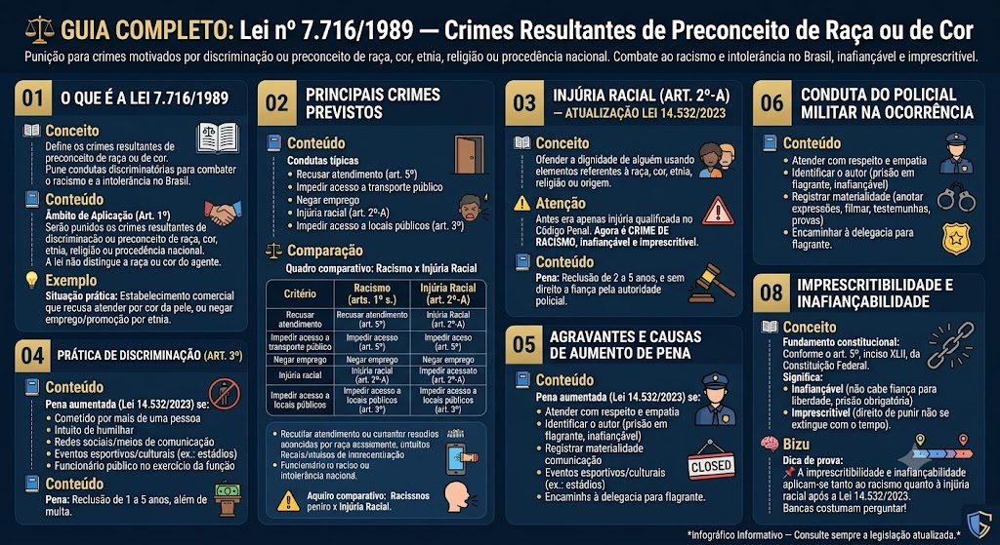

Lei de Execução Penal — Lei 7.210/1984
BR / 2026-10-13 / compilada (texto vigente)
Consultar fonte oficial Baixar cópia local
A redação desta cópia corresponde à versão identificada acima. Consulte a fonte oficial para conferir alterações posteriores e o recorte do seu edital.
Roteiro de leitura
- Órgãos e assistência
- Direitos e deveres
- Regimes, disciplina e execução
Índice dos 219 dispositivos
Lei nº 7.210 de 11/07/1984
LEI Nº 7.210, DE 11 DE JULHO DE 1984
Institui a Lei de Execução Penal.
O PRESIDENTE DA REPÚBLICA
Faço saber que o CONGRESSO NACIONAL decreta e eu sanciono a seguinte Lei:
TÍTULO I — DO OBJETO E DA APLICAÇÃO DA LEI DE EXECUÇÃO PENAL
Art. 1º A execução penal tem por objetivo efetivar as disposições de sentença ou decisão criminal e proporcionar condições para a harmônica integração social do condenado e do internado.
Art. 2º A jurisdição penal dos juízes ou tribunais da justiça ordinária, em todo o território nacional, será exercida, no processo de execução, na conformidade desta Lei e do Código de Processo Penal.
Parágrafo único. Esta Lei aplicar-se-á igualmente ao preso provisório e ao condenado pela Justiça Eleitoral ou Militar, quando recolhido a estabelecimento sujeito à jurisdição ordinária.
Art. 3º Ao condenado e ao internado serão assegurados todos os direitos não atingidos pela sentença ou pela lei.
Parágrafo único. Não haverá qualquer distinção de natureza racial, social, religiosa ou política.
Art. 4º O Estado deverá recorrer à cooperação da comunidade nas atividades de execução da pena e da medida de segurança.
TÍTULO II — DO CONDENADO E DO INTERNADO
CAPÍTULO I — DA CLASSIFICAÇÃO
Art. 5º Os condenados serão classificados, segundo os seus antecedentes e personalidade, para orientar a individualização da execução penal.
Art. 6º A classificação será feita por Comissão Técnica de Classificação que elaborará o programa individualizador da pena privativa de liberdade adequada ao condenado ou preso provisório. *(Artigo com redação dada pela Lei nº 10.792, de 1º/12/2003)*
Art. 7º A Comissão Técnica de Classificação, existente em cada estabelecimento, será presidida pelo Diretor e composta, no mínimo por dois chefes de serviço, um psiquiatra, um psicólogo e um assistente social, quando se tratar de condenado à pena privativa da liberdade.
Parágrafo único. Nos demais casos a Comissão atuará junto ao Juízo da Execução e será integrada por fiscais do Serviço Social.
Art. 8º O condenado ao cumprimento de pena privativa de liberdade, em regime fechado, será submetido a exame criminológico para a obtenção dos elementos necessários a uma adequada classificação e com vistas à individualização da execução.
Parágrafo único. Ao exame de que trata este artigo poderá ser submetido o condenado ao cumprimento da pena privativa de liberdade em regime semi-aberto.
Art. 9º A Comissão, no exame para a obtenção de dados reveladores da personalidade, observando a ética profissional e tendo sempre presentes peças ou informações do processo, poderá:
I - entrevistar pessoas;
II - requisitar, de repartições ou estabelecimentos privados, dados e informações a respeito do condenado;
III - realizar outras diligências e exames necessários.
Art. 9º-A. O condenado à pena de reclusão em regime inicial fechado será submetido obrigatoriamente à identificação do perfil genético, mediante extração de DNA (ácido desoxirribonucleico), por técnica adequada e indolor, por ocasião do ingresso no estabelecimento prisional. *(“Caput” do artigo acrescido pela Lei nº 12.654, de 28/5/2012, e com redação dada pela Lei nº 15.295, de 19/12/2025, em vigor 30 dias após a publicação)*
§ 1º A identificação do perfil genético será armazenada em banco de dados sigiloso, conforme regulamento a ser expedido pelo Poder Executivo. *(Parágrafo acrescido pela Lei nº 12.654, de 28/5/2012, publicada no DOU de 29/5/2012, em vigor 180 dias após a publicação)*
§ 1º-A. A regulamentação deverá fazer constar garantias mínimas de proteção de dados genéticos, observando as melhores práticas da genética forense. *(Parágrafo acrescido pela Lei nº 13.964, de 24/12/2019, publicada na Edição Extra do DOU de 24/12/2019, em vigor 30 dias após a publicação)*
§ 2º A autoridade policial, federal ou estadual, poderá requerer ao juiz competente, no caso de inquérito instaurado, o acesso ao banco de dados de identificação de perfil genético. *(Parágrafo acrescido pela Lei nº 12.654, de 28/5/2012, publicada no DOU de 29/5/2012, em vigor 180 dias após a publicação)*
§ 3º Deve ser viabilizado ao titular de dados genéticos o acesso aos seus dados constantes nos bancos de perfis genéticos, bem como a todos os documentos da cadeia de custódia que gerou esse dado, de maneira que possa ser contraditado pela defesa. *(Parágrafo acrescido pela Lei nº 13.964, de 24/12/2019, publicada na Edição Extra do DOU de 24/12/2019, em vigor 30 dias após a publicação)*
§ 4º O condenado pelos crimes previstos no *caput* deste artigo que não tiver sido submetido à identificação do perfil genético por ocasião do ingresso no estabelecimento prisional deverá ser submetido ao procedimento durante o cumprimento da pena. *(Parágrafo acrescido pela Lei nº 13.964, de 24/12/2019, publicada na Edição Extra do DOU de 24/12/2019, em vigor 30 dias após a publicação)*
§ 5º A amostra biológica coletada só poderá ser utilizada para o único e exclusivo fim de permitir a identificação pelo perfil genético, não estando autorizadas as práticas de fenotipagem genética. *(Parágrafo vetado pelo Presidente da República na Lei nº 13.964, de 24/12/2019, mantido pelo Congresso Nacional e publicado no DOU de 30/4/2021,* *e com redação dada pela Lei nº 15.295, de 19/12/2025, em vigor 30 dias após a publicação)*
§ 6º Uma vez identificado o perfil genético, a amostra biológica recolhida nos termos do *caput* deste artigo deverá ser correta e imediatamente descartada, guardando-se material suficiente para a eventualidade de nova perícia, nos termos do regulamento, vedada a sua utilização para qualquer outro fim. *(Parágrafo vetado pelo Presidente da República na Lei nº 13.964, de 24/12/2019, mantido pelo Congresso Nacional e publicado no DOU de 30/4/2021,* *e com redação dada pela Lei nº 15.295, de 19/12/2025, em vigor 30 dias após a publicação)*
§ 7º A coleta da amostra biológica será realizada por agente público treinado e respeitará os procedimentos de cadeia de custódia definidos pela legislação em vigor e complementados pelo órgão de perícia oficial de natureza criminal. *(Parágrafo vetado pelo Presidente da República na Lei nº 13.964, de 24/12/2019, mantido pelo Congresso Nacional e publicado no DOU de 30/4/2021,* *e com redação dada pela Lei nº 15.295, de 19/12/2025, em vigor 30 dias após a publicação)*
§ 8º Constitui falta grave a recusa do condenado em submeter-se ao procedimento de identificação do perfil genético. *(Parágrafo acrescido pela Lei nº 13.964, de 24/12/2019, publicada na Edição Extra do DOU de 24/12/2019, em vigor 30 dias após a publicação)*
§ 9º A elaboração do laudo da amostra biológica coletada nos termos do § 7º será realizada por perito oficial. *(Parágrafo acrescido pela Lei nº 15.295, de 19/12/2025, em vigor 30 dias após a publicação)*
§ 10. Nos casos dos crimes hediondos e equiparados, o processamento dos vestígios biológicos coletados em locais de crime e corpos de delito e a inclusão dos respectivos perfis genéticos no banco deverão ser realizados, se possível, em até 30 (trinta) dias contados da recepção da amostra pelo laboratório de DNA. *(Parágrafo acrescido pela Lei nº 15.295, de 19/12/2025, em vigor 30 dias após a publicação)*
CAPÍTULO II — DA ASSISTÊNCIA
Seção I — Disposições gerais
Art. 10. A assistência ao preso e ao internado é dever do Estado, objetivando prevenir o crime e orientar o retorno à convivência em sociedade.
Parágrafo único. A assistência estende-se ao egresso.
Art. 11. A assistência será:
I - material;
II - à saúde;
III - jurídica;
IV - educacional;
V - social;
VI - religiosa.
Seção II — Da assistência material
Art. 12. A assistência material ao preso e ao internado consistirá no fornecimento de alimentação, vestuário e instalações higiênicas.
Art. 13. O estabelecimento disporá de instalações e serviços que atendam aos presos nas suas necessidades pessoais, além de locais destinados à venda de produtos e objetos permitidos e não fornecidos pela Administração.
Seção III — Da assistência à saúde
Art. 14. A assistência à saúde do preso e do internado, de caráter preventivo e curativo, compreenderá atendimento médico, farmacêutico e odontológico.
§ 1º (VETADO).
§ 2º Quando o estabelecimento penal não estiver aparelhado para prover a assistência médica necessária, esta será prestada em outro local, mediante autorização da direção do estabelecimento.
§ 3º Será assegurado acompanhamento médico à mulher, principalmente no pré-natal e no pós-parto, extensivo ao recém-nascido. *(Parágrafo acrescido pela Lei nº 11.942, de 28/5/2009)*
§ 4º Será assegurado tratamento humanitário à mulher grávida durante os atos médico-hospitalares preparatórios para a realização do parto e durante o trabalho de parto, bem como à mulher no período de puerpério, cabendo ao poder público promover a assistência integral à sua saúde e à do recém-nascido. *(Parágrafo acrescido pela Lei nº 14.326, de 12/4/2022)*
Seção IV — Da assistência jurídica
Art. 15. A assistência jurídica é destinada aos presos e aos internados sem recursos financeiros para constituir advogado.
Art. 16. As Unidades da Federação deverão ter serviços de assistência jurídica, integral e gratuita, pela Defensoria Pública, dentro e fora dos estabelecimentos penais. *(“Caput” do artigo com redação dada pela Lei nº 12.313, de 19/8/2010)*
§ 1º As Unidades da Federação deverão prestar auxílio estrutural, pessoal e material à Defensoria Pública, no exercício de suas funções, dentro e fora dos estabelecimentos penais. *(Parágrafo acrescido pela Lei nº 12.313, de 19/8/2010)*
§ 2º Em todos os estabelecimentos penais, haverá local apropriado destinado ao atendimento pelo Defensor Público. *(Parágrafo acrescido pela Lei nº 12.313, de 19/8/2010)*
§ 3º Fora dos estabelecimentos penais, serão implementados Núcleos Especializados da Defensoria Pública para a prestação de assistência jurídica integral e gratuita aos réus, sentenciados em liberdade, egressos e seus familiares, sem recursos financeiros para constituir advogado. *(Parágrafo acrescido pela Lei nº 12.313, de 19/8/2010)*
Seção V — Da assistência educacional
Art. 17. A assistência educacional compreenderá a instrução escolar e a formação profissional do preso e do internado.
Art. 18. O ensino de primeiro grau será obrigatório, integrando-se no sistema escolar da unidade federativa.
Art. 18-A. O ensino médio, regular ou supletivo, com formação geral ou educação profissional de nível médio, será implantado nos presídios, em obediência ao preceito constitucional de sua universalização.
§ 1º O ensino ministrado aos presos e presas integrar-se-á ao sistema estadual e municipal de ensino e será mantido, administrativa e financeiramente, com o apoio da União, não só com os recursos destinados à educação, mas pelo sistema estadual de justiça ou administração penitenciária.
§ 2º Os sistemas de ensino oferecerão aos presos e às presas cursos supletivos de educação de jovens e adultos.
§ 3º A União, os Estados, os Municípios e o Distrito Federal incluirão em seus programas de educação à distância e de utilização de novas tecnologias de ensino, o atendimento aos presos e às presas. *(Artigo acrescido pela Lei nº 13.163, de 9/9/2015)*
Art. 19. O ensino profissional será ministrado em nível de iniciação ou de aperfeiçoamento técnico.
Parágrafo único. A mulher condenada terá ensino profissional adequado à sua condição.
Art. 20. As atividades educacionais podem ser objeto de convênio com entidades públicas ou particulares, que instalem escolas ou ofereçam cursos especializados.
Art. 21. Em atendimento às condições locais, dotar-se-á cada estabelecimento de uma biblioteca, para uso de todas as categorias de reclusos, provida de livros instrutivos, recreativos e didáticos.
Art. 21-A. O censo penitenciário deverá apurar:
I - o nível de escolaridade dos presos e das presas;
II - a existência de cursos nos níveis fundamental e médio e o número de presos e presas atendidos;
III - a implementação de cursos profissionais em nível de iniciação ou aperfeiçoamento técnico e o número de presos e presas atendidos;
IV - a existência de bibliotecas e as condições de seu acervo;
V - outros dados relevantes para o aprimoramento educacional de presos e presas. *(Artigo acrescido pela Lei nº 13.163, de 9/9/2015)*
Seção VI — Da assistência social
Art. 22. A assistência social tem por finalidade amparar o preso e o internado e prepará-los para o retorno à liberdade.
Art. 23. Incumbe ao serviço de assistência social:
I - conhecer os resultados dos diagnósticos e exames;
II - relatar, por escrito, ao diretor do estabelecimento, os problemas e as dificuldades enfrentados pelo assistido;
III - acompanhar o resultado das permissões de saídas e das saídas temporárias;
IV - promover, no estabelecimento, pelos meios disponíveis, a recreação;
V - promover a orientação do assistido, na fase final do cumprimento da pena, e do liberando, de modo a facilitar o seu retorno à liberdade;
VI - providenciar a obtenção de documentos, dos benefícios da previdência social e do seguro por acidente no trabalho;
VII - orientar e amparar, quando necessário, a família do preso, do internado e da vítima.
Seção VII — Da assistência religiosa
Art. 24. A assistência religiosa, com liberdade de culto, será prestada aos presos e aos internados, permitindo-se-lhes a participação nos serviços organizados no estabelecimento penal, bem como a posse de livros de instrução religiosa.
§ 1º No estabelecimento haverá local apropriado para os cultos religiosos.
§ 2º Nenhum preso ou internado poderá ser obrigado a participar de atividade religiosa.
Seção VIII — Da assistência ao egresso
Art. 25. A assistência ao egresso consiste:
I - na orientação e apoio para reintegrá-lo à vida em liberdade;
II - na concessão, se necessário, de alojamento e alimentação, em estabelecimento adequado, pelo prazo de dois meses.
Parágrafo único. O prazo estabelecido no inciso II poderá ser prorrogado uma única vez, comprovado, por declaração do assistente social, o empenho na obtenção de emprego.
Art. 26. Considera-se egresso para os efeitos desta Lei:
I - o liberado definitivo, pelo prazo de um ano a contar da saída do estabelecimento;
II - o liberado condicional, durante o período de prova.
Art. 27. O serviço de assistência social colaborará com o egresso para a obtenção de trabalho.
CAPÍTULO III — DO TRABALHO
Seção I — Disposições Gerais
Art. 28. O trabalho do condenado, como dever social e condição de dignidade humana, terá finalidade educativa e produtiva.
§ 1º Aplicam-se à organização e aos métodos de trabalho as precauções relativas à segurança e à higiene.
§ 2º O trabalho do preso não está sujeito ao regime da Consolidação das Leis do Trabalho.
Art. 29. O trabalho do preso será remunerado, mediante prévia tabela, não podendo ser inferior a três quartos do salário mínimo.
§ 1º O produto da remuneração pelo trabalho deverá atender:
a) à indenização dos danos causados pelo crime, desde que determinados judicialmente e não reparados por outros meios;
b) à assistência à família;
c) a pequenas despesas pessoais;
d) ao ressarcimento ao Estado das despesas realizadas com a manutenção do condenado, em proporção a ser fixada e sem prejuízo da destinação prevista nas letras anteriores.
§ 2º Ressalvadas outras aplicações legais, será depositada a parte restante para constituição do pecúlio, em cadernetas de poupança, que será entregue ao condenado quando posto em liberdade.
Art. 30. As tarefas executadas como prestação de serviço à comunidade não serão remuneradas.
Seção II — Do trabalho interno
Art. 31. O condenado à pena privativa de liberdade está obrigado ao trabalho na medida de suas aptidões e capacidade.
Parágrafo único. Para o preso provisório, o trabalho não é obrigatório e só poderá ser executado no interior do estabelecimento.
Art. 32. Na atribuição do trabalho deverão ser levadas em conta a habilitação, a condição pessoal e as necessidades futuras do preso, bem como as oportunidades oferecidas pelo mercado.
§ 1º Deverá ser limitado, tanto quanto possível, o artesanato sem expressão econômica, salvo nas regiões de turismo.
§ 2º Os maiores de sessenta anos poderão solicitar ocupação adequada à sua idade.
§ 3º Os doentes ou deficientes físicos somente exercerão atividades apropriadas ao seu estado.
Art. 33. A jornada normal de trabalho não será inferior a seis, nem superior a oito horas, com descanso nos domingos e feriados.
Parágrafo único. Poderá ser atribuído horário especial de trabalho aos presos designados para os serviços de conservação e manutenção do estabelecimento penal.
Art. 34. O trabalho poderá ser gerenciado por fundação, ou empresa pública, com autonomia administrativa, e terá por objetivo a formação profissional do condenado.
§ 1º Nessa hipótese, incumbirá à entidade gerenciadora promover e supervisionar a produção, com critérios e métodos empresariais, encarregar-se de sua comercialização, bem como suportar despesas, inclusive pagamento de remuneração adequada. *(Parágrafo único transformado em § 1º pela Lei nº 10.792, de 1º/12/2003)*
§ 2º Os governos federal, estadual e municipal poderão celebrar convênio com a iniciativa privada, para implantação de oficinas de trabalho referentes a setores de apoio dos presídios. *(Parágrafo acrescido pela Lei nº 10.792, de 1º/12/2003)*
Art. 35. Os órgãos da administração direta ou indireta da União, Estados, Territórios, Distrito Federal e dos Municípios adquirirão, com dispensa de concorrência pública, os bens ou produtos do trabalho prisional, sempre que não for possível ou recomendável realizar-se a venda a particulares.
Parágrafo único. Todas as importâncias arrecadadas com as vendas reverterão em favor da fundação ou empresa pública a que alude o artigo anterior ou, na sua falta, do estabelecimento penal.
Seção III — Do trabalho externo
Art. 36. O trabalho externo será admissível para os presos em regime fechado somente em serviço ou obras públicas realizadas por órgãos da administração direta ou indireta, ou entidades privadas, desde que tomadas as cautelas contra a fuga e em favor da disciplina.
§ 1º O limite máximo do número de presos será de dez por cento do total de empregados na obra.
§ 2º Caberá ao órgão da administração, à entidade ou à empresa empreiteira a remuneração desse trabalho.
§ 3º A prestação de trabalho a entidade privada depende do consentimento expresso do preso.
Art. 37. A prestação de trabalho externo, a ser autorizada pela direção do estabelecimento, dependerá de aptidão, disciplina e responsabilidade, além do cumprimento mínimo de um sexto de pena.
Parágrafo único. Revogar-se-á a autorização de trabalho externo ao preso que vier a praticar fato definido como crime, for punido por falta grave, ou tiver comportamento contrário aos requisitos estabelecidos neste artigo.
CAPÍTULO IV — DOS DEVERES, DOS DIREITOS E DA DISCIPLINA
Seção I — Dos Deveres
Art. 38. Cumpre ao condenado, além das obrigações legais inerentes ao seu estado, submeter-se às normas de execução da pena.
Art. 39. Constituem deveres do condenado:
I - comportamento disciplinado e cumprimento fiel da sentença;
II - obediência ao servidor e respeito a qualquer pessoa com quem deva relacionar-se;
III - urbanidade e respeito no trato com os demais condenados;
IV - conduta oposta aos movimentos individuais ou coletivos de fuga ou de subversão à ordem ou à disciplina;
V - execução do trabalho, das tarefas e das ordens recebidas;
VI - submissão à sanção disciplinar imposta;
VII - indenização à vítima ou aos seus sucessores;
VIII - indenização ao Estado, quando possível, das despesas realizadas com a sua manutenção, mediante desconto proporcional da remuneração do trabalho;
IX - higiene pessoal e asseio da cela ou alojamento;
X - conservação dos objetos de uso pessoal.
Parágrafo único. Aplica-se ao preso provisório, no que couber, o disposto neste artigo.
Seção II — Dos Direitos
Art. 40. Impõe-se a todas as autoridades o respeito à integridade física e moral dos condenados e dos presos provisórios.
Art. 41. Constituem direitos do preso:
I - alimentação suficiente e vestuário;
II - atribuição de trabalho e sua remuneração;
III - previdência social;
IV - constituição de pecúlio;
V - proporcionalidade na distribuição do tempo para o trabalho, o descanso e a recreação;
VI - exercício das atividades profissionais, intelectuais, artísticas e desportivas anteriores, desde que compatíveis com a execução da pena;
VII - assistência material, à saúde, jurídica, educacional, social e religiosa;
VIII - proteção contra qualquer forma de sensacionalismo;
IX - entrevista pessoal e reservada com o advogado;
X - visita do cônjuge, da companheira, de parentes e amigos em dias determinados;
XI - chamamento nominal;
XII - igualdade de tratamento salvo quanto às exigências da individualização da pena;
XIII - audiência especial com o diretor do estabelecimento;
XIV - representação e petição a qualquer autoridade, em defesa de direito;
XV - contato com o mundo exterior por meio de correspondência escrita, da leitura e de outros meios de informação que não comprometam a moral e dos bons costumes;
XVI - atestado de pena a cumprir, emitido anualmente, sob pena da responsabilidade da autoridade judiciária competente. *(Inciso acrescido pela Lei nº 10.713, de 13/8/2003, publicada no DOU de 14/8/2003, em vigor 90 dias após a publicação)*
§ 1º Os direitos previstos nos incisos V, X e XV poderão ser suspensos ou restringidos mediante ato motivado do juiz da execução penal. *(Parágrafo único transformado em §1º e com redação dada pela Lei nº 14.994, de 9/10/2024)*
§ 2º O preso condenado por crime contra a mulher por razões da condição do sexo feminino, nos termos do § 1º do art. 121-A do Decreto-Lei nº 2.848, de 7 de dezembro de 1940 (Código Penal), não poderá usufruir do direito previsto no inciso X em relação à visita íntima ou conjugal. *(Parágrafo acrescido pela Lei nº 14.994, de 9/10/2024)*
Art. 41-A. Os encontros realizados no parlatório ou por meio virtual entre presos provisórios ou condenados vinculados a organizações criminosas ultraviolentas, grupos paramilitares ou milícias privadas e os seus visitantes poderão ser monitorados por meio de captação audiovisual e gravação.
§ 1º O monitoramento poderá ser requerido pelo delegado de polícia, pelo Ministério Público ou pela administração penitenciária.
§ 2º A visitação e o monitoramento nos estabelecimentos penais federais de segurança máxima ficam sujeitos às regras especiais previstas na Lei nº 11.671, de 8 de maio de 2008. *(Artigo acrescido pela Lei nº 15.358, de 24/3/2026)*
Art. 41-B. Observado o disposto no § 2º do art. 41-A desta Lei, o conteúdo das comunicações monitoradas entre advogado e cliente, quando o monitoramento houver sido autorizado por razões fundadas de conluio criminoso reconhecidas judicialmente, será submetido à análise exclusiva do juízo competente para o controle da legalidade da investigação, distinto do juízo responsável pela instrução e pelo julgamento da ação penal.
§ 1º O juízo de controle decidirá sobre a licitude, a pertinência e a necessidade da prova e sobre a sua eventual inutilização, antes de qualquer remessa ao juízo da instrução.
§ 2º As gravações ou os registros que não interessarem à prova deverão ser inutilizados por decisão fundamentada do juízo de controle, a requerimento do Ministério Público ou da parte interessada, facultada a presença do acusado ou de seu defensor.
§ 3º O conteúdo das comunicações indeferidas ou declaradas ilícitas não poderá ser acessado, direta ou indiretamente, pelo juízo da instrução criminal. *(Artigo acrescido pela Lei nº 15.358, de 24/3/2026)*
Art. 42. Aplica-se ao preso provisório e ao submetido à medida de segurança, no que couber, o disposto nesta Seção.
Art. 43. É garantida a liberdade de contratar médico de confiança pessoal do internado ou do submetido a tratamento ambulatorial, por seus familiares ou dependentes, a fim de orientar e acompanhar o tratamento.
Parágrafo único. As divergências entre o médico oficial e o particular serão resolvidas pelo juiz de execução.
Seção III — Da disciplina
Subseção I — Disposições gerais
Art. 44. A disciplina consiste na colaboração com a ordem, na obediência às determinações das autoridades e seus agentes e no desempenho do trabalho.
Parágrafo único. Estão sujeitos à disciplina o condenado à pena privativa de liberdade ou restritiva de direitos e o preso provisório.
Art. 45. Não haverá falta nem sanção disciplinar sem expressa e anterior previsão legal ou regulamentar.
§ 1º As sanções não poderão colocar em perigo a integridade física e moral do condenado.
§ 2º É vedado o emprego de cela escura.
§ 3º São vedadas as sanções coletivas.
Art. 46. O condenado ou denunciado, no início da execução da pena ou da prisão, será cientificado das normas disciplinares.
Art. 47. O poder disciplinar, na execução da pena privativa de liberdade, será exercido pela autoridade administrativa conforme as disposições regulamentares.
Art. 48. Na execução das penas restritas de direitos, o poder disciplinar será exercido pela autoridade administrativa a que estiver sujeito o condenado.
Parágrafo único. Nas faltas graves, a autoridade representará ao juiz da execução para os fins dos arts. 118, inciso I, 125, 127, 181, §§ 1º, letra *d*, e 2º desta Lei.
Subseção II — Das faltas disciplinares
Art. 49. As faltas disciplinares classificam-se em leves, médias e graves. A legislação local especificará as leves e médias, bem assim as respectivas sanções.
Parágrafo único. Pune-se a tentativa com a sanção correspondente à falta consumada.
Art. 50. Comete falta grave o condenado à pena privativa de liberdade que:
I - incitar ou participar de movimento para subverter a ordem ou a disciplina;
II - fugir;
III - possuir, indevidamente, instrumento capaz de ofender a integridade física de outrem;
IV - provocar acidente de trabalho;
V - descumprir, no regime aberto, as condições impostas;
VI - inobservar os deveres previstos nos incisos II e V no art. 39 desta Lei;
VII - tiver em sua posse, utilizar ou fornecer aparelho telefônico, de rádio ou similar, que permita a comunicação com outros presos ou com o ambiente externo; *(Inciso acrescido pela Lei nº 11.466, de 28/3/2007)*
VIII - recusar submeter-se ao procedimento de identificação do perfil genético. *(Inciso acrescido pela Lei nº 13.964, de 24/12/2019, publicada na Edição Extra do DOU de 24/12/2019, em vigor 30 dias após a publicação)*
IX - se aproximar da residência ou do local de trabalho da vítima ou de seus familiares durante o cumprimento de pena em regime aberto ou semiaberto, ou ainda no gozo de qualquer benefício que lhe autorize a saída do estabelecimento penal, uma vez estabelecidas as medidas protetivas previstas nos incisos II e III do *caput* do art. 22 da Lei nº 11.340, de 7 de agosto de 2006 (Lei Maria da Penha), nos casos de condenação por crime de violência doméstica e familiar contra a mulher. *(Inciso acrescido pela Lei nº 15.410, de 20/5/2026)*
Parágrafo único. O disposto neste artigo aplica-se, no que couber, ao preso provisório.
Art. 51. Comete falta grave o condenado à pena restritiva de direitos que:
I - descumprir, injustificadamente, a restrição imposta;
II - retardar, injustificadamente, o cumprimento da obrigação imposta;
III - inobservar os deveres previstos nos incisos II e V do art. 39 desta Lei.
Art. 52. A prática de fato previsto como crime doloso constitui falta grave e, quando ocasionar subversão da ordem ou disciplina internas, sujeitará o preso provisório, ou condenado, nacional ou estrangeiro, sem prejuízo da sanção penal, ao regime disciplinar diferenciado, com as seguintes características: *(“Caput” do artigo com redação dada pela Lei nº 13.964, de 24/12/2019, publicada na Edição Extra do DOU de 24/12/2019, em vigor 30 dias após a publicação)*
I - duração máxima de até 2 (dois) anos, sem prejuízo de repetição da sanção por nova falta grave de mesma espécie; *(Inciso acrescido pela Lei nº 10.792, de 1º/12/2003, e com nova redação dada pela Lei nº 13.964, de 24/12/2019, publicada na Edição Extra do DOU de 24/12/2019, em vigor 30 dias após a publicação)*
II - recolhimento em cela individual; *(Inciso acrescido pela Lei nº 10.792, de 1º/12/2003, e com nova redação dada pela Lei nº 13.964, de 24/12/2019, publicada na Edição Extra do DOU de 24/12/2019, em vigor 30 dias após a publicação)*
III - visitas quinzenais, de 2 (duas) pessoas por vez, a serem realizadas em instalações equipadas para impedir o contato físico e a passagem de objetos, por pessoa da família ou, no caso de terceiro, autorizado judicialmente, com duração de 2 (duas) horas; *(Inciso acrescido pela Lei nº 10.792, de 1º/12/2003, e com nova redação dada pela Lei nº 13.964, de 24/12/2019, publicada na Edição Extra do DOU de 24/12/2019, em vigor 30 dias após a publicação)*
IV - direito do preso à saída da cela por 2 (duas) horas diárias para banho de sol, em grupos de até 4 (quatro) presos, desde que não haja contato com presos do mesmo grupo criminoso; *(Inciso acrescido pela Lei nº 10.792, de 1º/12/2003, e com nova redação dada pela Lei nº 13.964, de 24/12/2019, publicada na Edição Extra do DOU de 24/12/2019, em vigor 30 dias após a publicação)*
V - entrevistas sempre monitoradas, exceto aquelas com seu defensor, em instalações equipadas para impedir o contato físico e a passagem de objetos, salvo expressa autorização judicial em contrário; *(Inciso acrescido pela Lei nº 13.964, de 24/12/2019, publicada na Edição Extra do DOU de 24/12/2019, em vigor 30 dias após a publicação)*
VI - fiscalização do conteúdo da correspondência; *(Inciso acrescido pela Lei nº 13.964, de 24/12/2019, publicada na Edição Extra do DOU de 24/12/2019, em vigor 30 dias após a publicação)*
VII - participação em audiências judiciais preferencialmente por videoconferência, garantindo-se a participação do defensor no mesmo ambiente do preso. *(Inciso acrescido pela Lei nº 13.964, de 24/12/2019, publicada na Edição Extra do DOU de 24/12/2019, em vigor 30 dias após a publicação)*
§ 1º O regime disciplinar diferenciado também será aplicado aos presos provisórios ou condenados, nacionais ou estrangeiros: *(Parágrafo acrescido pela Lei nº 10.792, de 1º/12/2003, e com nova redação dada pela Lei nº 13.964, de 24/12/2019, publicada na Edição Extra do DOU de 24/12/2019, em vigor 30 dias após a publicação)*
I - que apresentem alto risco para a ordem e a segurança do estabelecimento penal ou da sociedade; *(Inciso acrescido pela Lei nº 13.964, de 24/12/2019, publicada na Edição Extra do DOU de 24/12/2019, em vigor 30 dias após a publicação)*
II - sob os quais recaiam fundadas suspeitas de envolvimento ou participação, a qualquer título, em organização criminosa, associação criminosa ou milícia privada, independentemente da prática de falta grave. *(Inciso acrescido pela Lei nº 13.964, de 24/12/2019, publicada na Edição Extra do DOU de 24/12/2019, em vigor 30 dias após a publicação)*
III - *(VETADO na Lei nº 15.407, de 11/5/2026)*
IV - *(VETADO na Lei nº 15.407, de 11/5/2026)*
§ 2º *(Parágrafo acrescido pela Lei nº 10.792, de 1º/12/2003, e revogado pela Lei nº 13.964, de 24/12/2019, publicada na Edição Extra do DOU de 24/12/2019, em vigor 30 dias após a publicação)*
§ 3º Existindo indícios de que o preso exerce liderança em organização criminosa, associação criminosa ou milícia privada, ou que tenha atuação criminosa em 2 (dois) ou mais Estados da Federação, o regime disciplinar diferenciado será obrigatoriamente cumprido em estabelecimento prisional federal. *(Parágrafo acrescido pela Lei nº 13.964, de 24/12/2019, publicada na Edição Extra do DOU de 24/12/2019, em vigor 30 dias após a publicação)*
§ 4º Na hipótese dos parágrafos anteriores, o regime disciplinar diferenciado poderá ser prorrogado sucessivamente, por períodos de 1 (um) ano, existindo indícios de que o preso:
I - continua apresentando alto risco para a ordem e a segurança do estabelecimento penal de origem ou da sociedade;
II - mantém os vínculos com organização criminosa, associação criminosa ou milícia privada, considerados também o perfil criminal e a função desempenhada por ele no grupo criminoso, a operação duradoura do grupo, a superveniência de novos processos criminais e os resultados do tratamento penitenciário. *(Parágrafo acrescido pela Lei nº 13.964, de 24/12/2019, publicada na Edição Extra do DOU de 24/12/2019, em vigor 30 dias após a publicação)*
§ 5º Na hipótese prevista no § 3º deste artigo, o regime disciplinar diferenciado deverá contar com alta segurança interna e externa, principalmente no que diz respeito à necessidade de se evitar contato do preso com membros de sua organização criminosa, associação criminosa ou milícia privada, ou de grupos rivais. *(Parágrafo acrescido pela Lei nº 13.964, de 24/12/2019, publicada na Edição Extra do DOU de 24/12/2019, em vigor 30 dias após a publicação)*
§ 6º A visita de que trata o inciso III do *caput* deste artigo será gravada em sistema de áudio ou de áudio e vídeo, com autorização judicial, e acompanhada por policial penal. *(Parágrafo acrescido pela Lei nº 13.964, de 24/12/2019,* *e com redação dada pela Lei nº 15.358, de 24/3/2026)*
§ 7º Após os primeiros 6 (seis) meses de regime disciplinar diferenciado, o preso que não receber a visita de que trata o inciso III do *caput* deste artigo poderá, após prévio agendamento, ter contato telefônico, que será gravado, com uma pessoa da família, 2 (duas) vezes por mês e por 10 (dez) minutos. *(Parágrafo acrescido pela Lei nº 13.964, de 24/12/2019, publicada na Edição Extra do DOU de 24/12/2019, em vigor 30 dias após a publicação)*
§ 8º Também estará sujeito ao regime disciplinar diferenciado, nos termos do *caput* deste artigo, o preso que, tendo cometido crime de violência doméstica e familiar contra a mulher, ameace ou pratique violência contra a vítima ou seus familiares. *(Parágrafo acrescido pela Lei nº 15.410, de 20/5/2026)*
§ 9º *(VETADO na Lei nº 15.407, de 11/5/2026)*
§ 10. Desde a data de recolhimento do preso provisório ou condenado e, presentes os pressupostos legais, o diretor do estabelecimento ou outra autoridade administrativa ou o órgão do Ministério Público poderá solicitar ao juiz sua inclusão no regime disciplinar diferenciado. *(Parágrafo acrescido pela Lei nº 15.407, de 11/5/2026)*
Subseção III — Das sanções e das recompensas
Art. 53. Constituem sanções disciplinares:
I - advertência verbal;
II - repreensão;
III - suspensão ou restrição de direitos (art. 41, parágrafo único);
IV - isolamento na própria cela, ou em local adequado, nos estabelecimentos que possuam alojamento coletivo, observado o disposto no art. 8º desta Lei;
V - inclusão no regime disciplinar diferenciado. *(Inciso acrescido pela Lei nº 10.792, de 1º/12/2003)*
Art. 54. As sanções dos incisos I a IV do art. 53 serão aplicadas por ato motivado do diretor do estabelecimento e a do inciso V, por prévio e fundamentado despacho do juiz competente. *(“Caput” do artigo com redação dada pela Lei nº 10.792, de 1º/12/2003)*
§ 1º A autorização para a inclusão do preso em regime disciplinar dependerá de requerimento circunstanciado elaborado pelo diretor do estabelecimento ou outra autoridade administrativa. *(Parágrafo acrescido pela Lei nº 10.792, de 1º/12/2003)*
§ 2º O juiz decidirá liminarmente sobre o pedido de inclusão de preso em regime disciplinar diferenciado e prolatará decisão final no prazo máximo de 15 (quinze) dias, após manifestação do Ministério Público e da defesa. *(Parágrafo acrescido pela Lei nº 10.792, de 1º/12/2003,* *e com redação dada pela Lei nº 15.407, de 11/5/2026)*
§ 3º A ausência de manifestação do Ministério Público ou da defesa não configura impedimento para a decisão do juiz competente, respeitado o prazo estabelecido no § 2º deste artigo. *(Parágrafo acrescido pela Lei nº 15.407, de 11/5/2026)*
Art. 55. As recompensas têm em vista o bom comportamento reconhecido em favor do condenado, de sua colaboração com a disciplina e de sua dedicação ao trabalho.
Art. 56. São recompensas:
I - o elogio;
II - a concessão de regalias.
Parágrafo único. A legislação local e os regulamentos estabelecerão a natureza e a forma de concessão de regalias.
Subseção IV — Da aplicação das sanções
Art. 57. Na aplicação das sanções disciplinares, levar-se-ão em conta a natureza, os motivos, as circunstâncias e as conseqüências do fato, bem como a pessoa do faltoso e seu tempo de prisão.
Parágrafo único. Nas faltas graves, aplicam-se as sanções previstas nos incisos III a V do art. 53 desta Lei. *(Artigo com redação dada pela Lei nº 10.792, de 1º/12/2003)*
Art. 58. O isolamento, a suspensão e a restrição de direitos não poderão exceder a trinta dias, ressalvada a hipótese do regime disciplinar diferenciado. *(“Caput” do artigo com redação dada pela Lei nº 10.792, de 1º/12/2003)*
Parágrafo único. O isolamento será sempre comunicado ao juiz da execução.
Subseção V — Do procedimento disciplinar
Art. 59. Praticada a falta disciplinar, deverá ser instaurado o procedimento para sua apuração, conforme regulamento, assegurado o direito de defesa.
Parágrafo único. A decisão será motivada.
Art. 60. A autoridade administrativa poderá decretar o isolamento preventivo do faltoso pelo prazo de até dez dias. A inclusão do preso no regime disciplinar diferenciado, no interesse da disciplina e da averiguação do fato, dependerá de despacho do juiz competente.
Parágrafo único. O tempo de isolamento ou inclusão preventiva no regime disciplinar diferenciado será computado no período de cumprimento da sanção disciplinar. *(Artigo com redação dada pela Lei nº 10.792, de 1º/12/2003)*
TÍTULO III — DOS ÓRGÃOS DA EXECUÇÃO PENAL
CAPÍTULO I — DISPOSIÇÕES GERAIS
Art. 61. São órgãos da execução penal:
I - o Conselho Nacional de Política Criminal e Penitenciária;
II - o Juízo da Execução;
III - o Ministério Público;
IV - o Conselho Penitenciário;
V - os Departamentos Penitenciários;
VI - o Patronato;
VII - o Conselho da Comunidade;
VIII - a Defensoria Pública. *(Inciso acrescido pela Lei nº 12.313, de 19/8/2010)*
CAPÍTULO II — DO CONSELHO NACIONAL DE
POLÍTICA CRIMINAL E PENITENCIÁRIA
Art. 62. O Conselho Nacional de Política Criminal e Penitenciária, com sede na Capital da República, é subordinado ao Ministério da Justiça.
Art. 63. O Conselho Nacional de Política Criminal e Penitenciária será integrado por treze membros designados através de ato do Ministério da Justiça, dentre professores e profissionais da área do Direito Penal, Processual Penal, Penitenciário e ciências correlatas, bem como por representantes da comunidade e dos Ministérios da área social.
Parágrafo único. O mandato dos membros do Conselho terá duração de dois anos, renovado um terço em cada ano.
Art. 64. Ao Conselho Nacional de Política Criminal e Penitenciária, no exercício de suas atividades, em âmbito federal ou estadual, incumbe:
I - propor diretrizes da política criminal quanto a prevenção do delito, Administração da Justiça Criminal e execução das penas e das medidas de segurança;
II - contribuir na elaboração de planos nacionais de desenvolvimento, sugerindo as metas e prioridades da política criminal e penitenciária;
III - promover a avaliação periódica do sistema criminal para a sua adequação às necessidades do País;
IV - estimular e promover a pesquisa criminológica;
V - elaborar programa nacional penitenciário de formação e aperfeiçoamento do servidor;
VI - estabelecer regras sobre a arquitetura e construção de estabelecimentos penais e casas de albergados;
VII - estabelecer os critérios para a elaboração da estatística criminal;
VIII - inspecionar e fiscalizar os estabelecimentos penais, bem assim informar-se, mediante relatórios do Conselho Penitenciário, requisições, visitas ou outros meios, acerca do desenvolvimento da execução penal nos Estados, Territórios e Distrito Federal, propondo às autoridades dela incumbida as medidas necessárias ao seu aprimoramento;
IX - representar ao juiz da execução ou à autoridade administrativa para instauração de sindicância ou procedimento administrativo, em caso de violação das normas referentes à execução penal;
X - representar à autoridade competente para a interdição, no todo ou em parte, de estabelecimento penal.
CAPÍTULO III — DO JUÍZO DA EXECUÇÃO
Art. 65. A execução penal competirá ao juiz indicado na lei local de organização judiciária e, na sua ausência, ao da sentença.
Art. 66. Compete ao juiz da execução:
I - aplicar aos casos julgados lei posterior que de qualquer modo favorecer o condenado;
II - declarar extinta a punibilidade;
III - decidir sobre:
a) soma ou unificação de penas;
b) progressão ou regressão nos regimes;
c) detração e remição da pena;
d) suspensão condicional da pena;
e) livramento condicional;
f) incidentes da execução;
IV - autorizar saídas temporárias;
V - determinar:
a) a forma de cumprimento da pena restritiva de direitos e fiscalizar sua execução;
b) a conversão da pena restritiva de direitos e de multa em privativa de liberdade;
c) a conversão da pena privativa de liberdade em restritiva de direitos;
d) a aplicação da medida de segurança, bem como a substituição da pena por medida de segurança;
e) a revogação da medida de segurança;
f) a desinternação e o restabelecimento da situação anterior;
g) o cumprimento de pena ou medida de segurança em outra Comarca;
h) a remoção do condenado na hipótese prevista no § 1º do art. 86 desta Lei;
i) *(VETADA na Lei nº 12.258, de 15/6/2010)*
j) a utilização do equipamento de monitoração eletrônica pelo condenado nas hipóteses legais; *(Alínea acrescida pela Lei nº 14.843, de 11/4/2024)*
VI - zelar pelo correto cumprimento da pena e da medida de segurança;
VII - inspecionar, mensalmente, os estabelecimentos penais, tomando providências para o adequado funcionamento e promovendo, quando for o caso, a apuração de responsabilidade;
VIII - interditar, no todo ou em parte, estabelecimento penal que estiver funcionando em condições inadequadas ou com infringência aos dispositivos desta Lei;
IX - compor e instalar o Conselho da Comunidade;
X - emitir anualmente atestado de pena a cumprir. *(Inciso acrescido pela Lei nº 10.713, de 13/8/2003, publicada no DOU de 14/8/2003, em vigor 90 dias após a publicação)*
CAPÍTULO IV — DO MINISTÉRIO PÚBLICO
Art. 67. O Ministério Público fiscalizará a execução da pena e da medida de segurança, oficiando no processo executivo e nos incidentes da execução.
Art. 68. Incumbe, ainda, ao Ministério Público:
I - fiscalizar a regularidade formal das guias de recolhimento e de internamento;
II - requerer:
a) todas as providências necessárias ao desenvolvimento do processo executivo;
b) a instauração dos incidentes de excesso ou desvio de execução;
c) a aplicação de medida de segurança, bem como a substituição da pena por medida de segurança;
d) a revogação da medida de segurança;
e) a conversão de penas, a progressão ou regressão nos regimes e a revogação da suspensão condicional da pena e do livramento condicional;
f) a internação, a desinternação e o restabelecimento da situação anterior;
III - interpor recursos de decisões proferidas pela autoridade judiciária, durante a execução.
Parágrafo único. O órgão do Ministério Público visitará mensalmente os estabelecimentos penais, registrando a sua presença em livro próprio.
CAPÍTULO V — DO CONSELHO PENITENCIÁRIO
Art. 69. O Conselho Penitenciário é órgão consultivo e fiscalizador da execução da pena.
§ 1º O Conselho será integrado por membros nomeados pelo Governador do Estado, do Distrito Federal e dos Territórios, dentre professores e profissionais da área do Direito Penal, Processual Penal, Penitenciário e ciências correlatas, bem como por representantes da comunidade. A legislação federal e estadual regulará o seu funcionamento.
§ 2º O mandato dos membros do Conselho Penitenciário terá a duração de quatro anos.
Art. 70. Incumbe ao Conselho Penitenciário:
I - emitir parecer sobre indulto e comutação de pena, excetuada a hipótese de pedido de indulto com base no estado de saúde do preso; *(Inciso com redação dada pela Lei nº 10.792, de 1º/12/2003)*
II - inspecionar os estabelecimentos e serviços penais;
III - apresentar, no primeiro trimestre de cada ano, ao Conselho Nacional de Política Criminal e Penitenciária, relatório dos trabalhos efetuados no exercício anterior;
IV - supervisionar os patronatos, bem como assistência dos egressos.
CAPÍTULO VI — DOS DEPARTAMENTOS PENITENCIÁRIOS
Seção I — Do Departamento Penitenciário Nacional
Art. 71. O Departamento Penitenciário Nacional, subordinado ao Ministério da Justiça, é órgão executivo da Política Penitenciária Nacional e de apoio administrativo e financeiro do Conselho Nacional de Política Criminal e Penitenciária. *(Denominação do “Departamento Penitenciário Nacional” alterada para “Secretaria Nacional de Políticas Penais” pela Medida Provisória nº 1.154, de 1º/1/2023, convertida na Lei nº 14.600, de 19/6/2023)*
Art. 72. São atribuições do Departamento Penitenciário Nacional:
I - acompanhar a fiel aplicação das normas de execução penal em todo o território nacional;
II - inspecionar e fiscalizar periodicamente os estabelecimentos e serviços penais;
III - assistir tecnicamente as unidades federativas na implementação dos princípios e regras estabelecidos nesta Lei;
IV - colaborar com as unidades federativas, mediante convênios, na implantação de estabelecimentos e serviços penais;
V - colaborar com as unidades federativas para a realização de cursos de formação de pessoal penitenciário e de ensino profissionalizante do condenado e do internado;
VI - estabelecer, mediante convênios com as unidades federativas, o cadastro nacional das vagas existentes em estabelecimentos locais destinadas ao cumprimento de penas privativas de liberdade aplicadas pela justiça de outra unidade federativa, em especial para presos sujeitos a regime disciplinar; *(Inciso acrescido pela Lei nº 10.792, de 1º/12/2003)*
VII - acompanhar a execução da pena das mulheres beneficiadas pela progressão especial de que trata o § 3º do art. 112 desta Lei, monitorando sua integração social e a ocorrência de reincidência, específica ou não, mediante a realização de avaliações periódicas e de estatísticas criminais. *(Inciso acrescido pela Lei nº 13.769, de 19/12/2018)*
§ 1º Incumbem também ao Departamento a coordenação e supervisão dos estabelecimentos penais e de internamento federais. *(Parágrafo único transformado em § 1º pela Lei nº 13.769, de 19/12/2018)*
§ 2º Os resultados obtidos por meio do monitoramento e das avaliações periódicas previstas no inciso VII do *caput* deste artigo serão utilizados para, em função da efetividade da progressão especial para a ressocialização das mulheres de que trata o § 3º do art. 112 desta Lei, avaliar eventual desnecessidade do regime fechado de cumprimento de pena para essas mulheres nos casos de crimes cometidos sem violência ou grave ameaça. *(Parágrafo acrescido pela Lei nº 13.769, de 19/12/2018)*
Seção II — Do Departamento Penitenciário local
Art. 73. A legislação local poderá criar Departamento Penitenciário ou órgão similar, com as atribuições que estabelecer.
Art. 74. O Departamento Penitenciário local, ou órgão similar, tem por finalidade supervisionar e coordenar os estabelecimentos penais da unidade da Federação a que pertencer.
Parágrafo único. Os órgãos referidos no *caput* deste artigo realizarão o acompanhamento de que trata o inciso VII do *caput* do art. 72 desta Lei e encaminharão ao Departamento Penitenciário Nacional os resultados obtidos. *(Parágrafo único acrescido pela Lei nº 13.769, de 19/12/2018)*
Seção III — Da direção e do pessoal dos estabelecimentos penais
Art. 75. O ocupante do cargo de diretor de estabelecimento deverá satisfazer os seguintes requisitos:
I - ser portador de diploma de nível superior de Direito, ou Psicologia, ou Ciências Sociais, ou Pedagogia, ou Serviços Sociais;
II - possuir experiência administrativa na área;
III - ter idoneidade moral e reconhecida aptidão para o desempenho da função.
Parágrafo único. O diretor deverá residir no estabelecimento, ou nas proximidades, e dedicará tempo integral à sua função.
Art. 76. O Quadro do Pessoal Penitenciário será organizado em diferentes categorias funcionais, segundo as necessidades do serviço, com especificação de atribuições relativas às funções de direção, chefia e assessoramento do estabelecimento e às demais funções.
Art. 77. A escolha do pessoal administrativo, especializado, de instrução técnica e de vigilância atenderá a vocação, preparação profissional e antecedentes pessoais do candidato.
§ 1º O ingresso do pessoal penitenciário, bem como a progressão ou a ascensão funcional dependerão de cursos específicos de formação, procedendo-se à reciclagem periódica dos servidores em exercício.
§ 2º No estabelecimento para mulheres somente se permitirá o trabalho de pessoal do sexo feminino, salvo quando se tratar de pessoal técnico especializado.
CAPÍTULO VII — DO PATRONATO
Art. 78. O Patronato público ou particular destina-se a prestar assistência aos albergados e aos egressos (art. 26).
Art. 79. Incumbe também ao Patronato:
I - orientar os condenados à pena restritiva de direitos;
II - fiscalizar o cumprimento das penas de prestação de serviço à comunidade e de limitação de fim de semana;
III - colaborar na fiscalização do cumprimento das condições da suspensão e do livramento condicional.
CAPÍTULO VIII — DO CONSELHO DA COMUNIDADE
Art. 80. Haverá, em cada comarca, um Conselho da Comunidade composto, no mínimo, por 1 (um) representante de associação comercial ou industrial, 1 (um) advogado indicado pela Seção da Ordem dos Advogados do Brasil, 1 (um) Defensor Público indicado pelo Defensor Público Geral e 1 (um) assistente social escolhido pela Delegacia Seccional do Conselho Nacional de Assistentes Sociais. *(“Caput” do artigo com redação dada pela Lei nº 12.313, de 19/8/2010)*
Parágrafo único. Na falta da representação prevista neste artigo, ficará a critério do juiz da execução a escolha dos integrantes do Conselho.
Art. 81. Incumbe ao Conselho da Comunidade:
I - visitar, pelo menos mensalmente, os estabelecimentos penais existentes na Comarca;
II - entrevistar presos;
III - apresentar relatórios mensais ao juiz da execução e ao Conselho Penitenciário;
IV - diligenciar a obtenção de recursos materiais e humanos para melhor assistência ao preso ou internado, em harmonia com a direção do estabelecimento.
CAPÍTULO IX — DA DEFENSORIA PÚBLICA
*(Capítulo acrescido pela Lei nº 12.313, de 19/8/2010)*
Art. 81-A. A Defensoria Pública velará pela regular execução da pena e da medida de segurança, oficiando, no processo executivo e nos incidentes da execução, para a defesa dos necessitados em todos os graus e instâncias, de forma individual e coletiva. *(Artigo acrescido pela Lei nº 12.313, de 19/8/2010)*
Art. 81-B. Incumbe, ainda, à Defensoria Pública:
I - requerer:
a) todas as providências necessárias ao desenvolvimento do processo executivo;
b) a aplicação aos casos julgados de lei posterior que de qualquer modo favorecer o condenado;
c) a declaração de extinção da punibilidade;
d) a unificação de penas;
e) a detração e remição da pena;
f) a instauração dos incidentes de excesso ou desvio de execução;
g) a aplicação de medida de segurança e sua revogação, bem como a substituição da pena por medida de segurança;
h) a conversão de penas, a progressão nos regimes, a suspensão condicional da pena, o livramento condicional, a comutação de pena e o indulto;
i) a autorização de saídas temporárias;
j) a internação, a desinternação e o restabelecimento da situação anterior;
k) o cumprimento de pena ou medida de segurança em outra comarca;
l) a remoção do condenado na hipótese prevista no § 1º do art. 86 desta Lei;
II - requerer a emissão anual do atestado de pena a cumprir;
III - interpor recursos de decisões proferidas pela autoridade judiciária ou administrativa durante a execução;
IV - representar ao Juiz da execução ou à autoridade administrativa para instauração de sindicância ou procedimento administrativo em caso de violação das normas referentes à execução penal;
V - visitar os estabelecimentos penais, tomando providências para o adequado funcionamento, e requerer, quando for o caso, a apuração de responsabilidade;
VI - requerer à autoridade competente a interdição, no todo ou em parte, de estabelecimento penal.
Parágrafo único. O órgão da Defensoria Pública visitará periodicamente os estabelecimentos penais, registrando a sua presença em livro próprio. *(Artigo acrescido pela Lei nº 12.313, de 19/8/2010)*
TÍTULO IV — DOS ESTABELECIMENTOS PENAIS
CAPÍTULO I — DISPOSIÇÕES GERAIS
Art. 82. Os estabelecimentos penais destinam-se ao condenado, ao submetido à medida de segurança, ao preso provisório e ao egresso.
§ 1º A mulher e o maior de sessenta anos, separadamente, serão recolhidos a estabelecimento próprio e adequado à sua condição pessoal. *(Parágrafo com redação dada pela Lei nº 9.460, de 4/6/1997)*
§ 2º O mesmo conjunto arquitetônico poderá abrigar estabelecimentos de destinação diversa desde que devidamente isolados.
Art. 83. O estabelecimento penal, conforme a sua natureza, deverá contar em suas dependências com áreas e serviços destinados a dar assistência, educação, trabalho, recreação e prática esportiva.
§ 1º Haverá instalação destinada a estágio de estudantes universitários. *(Parágrafo único transformado em § 1º pela Lei nº 9.046, de 18/5/1995)*
§ 2º Os estabelecimentos penais destinados a mulheres serão dotados de berçário, onde as condenadas possam cuidar de seus filhos, inclusive amamentá-los, no mínimo, até 6 (seis) meses de idade. *(Parágrafo acrescido pela Lei nº 9.046, de 18/5/1995, e com nova redação dada pela Lei nº 11.942, de 28/5/2009)*
§ 3º Os estabelecimentos de que trata o § 2º deste artigo deverão possuir, exclusivamente, agentes do sexo feminino na segurança de suas dependências internas. *(Parágrafo acrescido pela Lei nº 12.121, de 15/12/2009, publicada no DOU de 16/12/2009, em vigor 180 dias após sua publicação)*
§ 4º Serão instaladas salas de aulas destinadas a cursos do ensino básico e profissionalizante. *(Parágrafo acrescido pela Lei nº 12.245, de 24/5/2010)*
§ 5º Haverá instalação destinada à Defensoria Pública. *(Parágrafo acrescido pela Lei nº 12.313, de 19/8/2010)*
Art. 83-A. Poderão ser objeto de execução indireta as atividades materiais acessórias, instrumentais ou complementares desenvolvidas em estabelecimentos penais, e notadamente:
I - serviços de conservação, limpeza, informática, copeiragem, portaria, recepção, reprografia, telecomunicações, lavanderia e manutenção de prédios, instalações e equipamentos internos e externos;
II - serviços relacionados à execução de trabalho pelo preso.
§ 1º A execução indireta será realizada sob supervisão e fiscalização do poder público.
§ 2º Os serviços relacionados neste artigo poderão compreender o fornecimento de materiais, equipamentos, máquinas e profissionais. *(Artigo acrescido pela Lei nº 13.190, de 19/11/2015)*
Art. 83-B. São indelegáveis as funções de direção, chefia e coordenação no âmbito do sistema penal, bem como todas as atividades que exijam o exercício do poder de polícia, e notadamente:
I - classificação de condenados;
II - aplicação de sanções disciplinares;
III - controle de rebeliões;
IV - transporte de presos para órgãos do Poder Judiciário, hospitais e outros locais externos aos estabelecimentos penais. *(Artigo acrescido pela Lei nº 13.190, de 19/11/2015)*
Art. 84. O preso provisório ficará separado do condenado por sentença transitada em julgado.
§ 1º Os presos provisórios ficarão separados de acordo com os seguintes critérios: *(Parágrafo com redação dada pela Lei nº 13.167, de 6/10/2015)*
I - acusados pela prática de crimes hediondos ou equiparados; *(Inciso acrescido pela Lei nº 13.167, de 6/10/2015)*
II - acusados pela prática de crimes cometidos com violência ou grave ameaça à pessoa; *(Inciso acrescido pela Lei nº 13.167, de 6/10/2015)*
III - acusados pela prática de outros crimes ou contravenções diversos dos apontados nos incisos I e II. *(Inciso acrescido pela Lei nº 13.167, de 6/10/2015)*
§ 2º O preso que, ao tempo do fato, era funcionário da Administração da Justiça Criminal ficará em dependência separada.
§ 3º Os presos condenados ficarão separados de acordo com os seguintes critérios:
I - condenados pela prática de crimes hediondos ou equiparados;
II - reincidentes condenados pela prática de crimes cometidos com violência ou grave ameaça à pessoa;
III - primários condenados pela prática de crimes cometidos com violência ou grave ameaça à pessoa;
IV - demais condenados pela prática de outros crimes ou contravenções em situação diversa das previstas nos incisos I, II e III. *(Parágrafo acrescido pela Lei nº 13.167, de 6/10/2015)*
§ 4º O preso que tiver sua integridade física, moral ou psicológica ameaçada pela convivência com os demais presos ficará segregado em local próprio. *(Parágrafo acrescido pela Lei nº 13.167, de 6/10/2015)*
Art. 85. O estabelecimento penal deverá ter lotação compatível com a sua estrutura e finalidade.
Parágrafo único. O Conselho Nacional de Política Criminal e Penitenciária determinará o limite máximo de capacidade do estabelecimento, atendendo a sua natureza e peculiaridades.
Art. 86. As penas privativas de liberdade aplicadas pela Justiça de uma unidade federativa podem ser executadas em outra unidade, em estabelecimento local ou da União.
§ 1º A União Federal poderá construir estabelecimento penal em local distante da condenação para recolher os condenados, quando a medida se justifique no interesse da segurança pública ou do próprio condenado. *(Parágrafo com redação dada pela Lei nº 10.792, de 1º/12/2003)*
§ 2º Conforme a natureza do estabelecimento, nele poderão trabalhar os liberados ou egressos que se dediquem a obras públicas ou ao aproveitamento de terras ociosas.
§ 3º Caberá ao juiz competente, no prazo de 24 (vinte e quatro) horas, a requerimento da administração penitenciária, definir o estabelecimento prisional adequado para abrigar o preso provisório ou condenado, em atenção ao regime e aos requisitos estabelecidos. *(Parágrafo acrescido pela Lei nº 10.792, de 1º/12/2003,* *e com redação dada pela Lei nº 15.358, de 24/3/2026)*
§ 4º Será transferido para estabelecimento penal localizado em outra unidade federativa, inclusive da União, o condenado ou preso provisório que, tendo cometido crime de violência doméstica e familiar contra a mulher, ameace ou pratique violência contra a vítima ou seus familiares durante o cumprimento da pena. *(Parágrafo acrescido pela Lei nº 14.994, de 9/10/2024,* *e com redação dada pela Lei nº 15.410, de 20/5/2026)*
§ 5º Na hipótese de risco iminente e grave à segurança, à vida ou à integridade física de detento, de servidor ou de terceiros, como nos casos de motim, rebelião ou outras situações de grave perturbação da ordem no estabelecimento prisional, a administração penitenciária poderá promover, em caráter excepcional, a transferência de presos para outros estabelecimentos prisionais e deverá comunicá-la imediatamente ao juiz competente, que decidirá, no prazo de 24 (vinte e quatro) horas, sobre os respectivos destinos. *(Parágrafo acrescido pela Lei nº 15.358, de 24/3/2026)*
CAPÍTULO II — DA PENITENCIÁRIA
Art. 87. A Penitenciária destina-se ao condenado à pena de reclusão, em regime fechado.
Parágrafo único. A União Federal, os Estados, o Distrito Federal e os Territórios poderão construir Penitenciárias destinadas, exclusivamente, aos presos provisórios e condenados que estejam em regime fechado, sujeitos ao regime disciplinar diferenciado, nos termos do art. 52 desta Lei. *(Parágrafo único acrescido pela Lei nº 10.792, de 1º/12/2003)*
Art. 88. O condenado será alojado em cela individual que conterá dormitório, aparelho sanitário e lavatório.
Parágrafo único. São requisitos básicos da unidade celular:
a) salubridade do ambiente pela concorrência dos fatores de aeração, insolação e condicionamento térmico adequado à existência humana;
b) área mínima de seis metros quadrados.
Art. 89. Além dos requisitos referidos no art. 88, a penitenciária de mulheres será dotada de seção para gestante e parturiente e de creche para abrigar crianças maiores de 6 (seis) meses e menores de 7 (sete) anos, com a finalidade de assistir a criança desamparada cuja responsável estiver presa. *("Caput" do artigo com redação dada pela Lei nº 11.942, de 28/5/2009)*
Parágrafo único. São requisitos básicos da seção e da creche referidas neste artigo:
I - atendimento por pessoal qualificado, de acordo com as diretrizes adotadas pela legislação educacional e em unidades autônomas; e
II - horário de funcionamento que garanta a melhor assistência à criança e à sua responsável. *(Parágrafo único acrescido pela Lei nº 11.942, de 28/5/2009)*
Art. 90. A penitenciária de homens será construída em local afastado do centro urbano a distância que não restrinja a visitação.
CAPÍTULO III — DA COLÔNIA AGRÍCOLA, INDUSTRIAL OU SIMILAR
Art. 91. A Colônia Agrícola, Industrial ou similar destina-se ao cumprimento da pena em regime semi-aberto.
Art. 92. O condenado poderá ser alojado em compartimento coletivo, observados os requisitos da letra *a* do parágrafo único do art. 88 desta Lei.
Parágrafo único. São também requisitos básicos das dependências coletivas:
a) a seleção adequada dos presos;
b) o limite de capacidade máxima que atenda os objetivos de individualização da pena.
CAPÍTULO IV — DA CASA DO ALBERGADO
Art. 93. A Casa do Albergado destina-se ao cumprimento de pena privativa de liberdade, em regime aberto, e da pena de limitação de fim de semana.
Art. 94. O prédio deverá situar-se em centro urbano, separado dos demais estabelecimentos, e caracterizar-se pela ausência de obstáculos físicos contra a fuga.
Art. 95. Em cada região haverá, pelo menos, uma Casa do Albergado, a qual deverá conter, além dos aposentos para acomodar os presos, local adequado para cursos e palestras.
Parágrafo único. O estabelecimento terá instalações para os serviços de fiscalização e orientação dos condenados.
CAPÍTULO V — DO CENTRO DE OBSERVAÇÃO
Art. 96. No Centro de Observação realizar-se-ão os exames gerais e o criminológico, cujos resultados serão encaminhados à Comissão Técnica de Classificação.
Parágrafo único. No Centro poderão ser realizadas pesquisas criminológicas.
Art. 97. O Centro de Observação será instalado em unidade autônoma ou em anexo a estabelecimento penal.
Art. 98. Os exames poderão ser realizados pela Comissão Técnica de Classificação, na falta do Centro de Observação.
CAPÍTULO VI — DO HOSPITAL DE CUSTÓDIA E TRATAMENTO PSIQUIÁTRICO
Art. 99. O Hospital de Custódia e Tratamento Psiquiátrico destina-se aos inimputáveis e semi-imputáveis referidos no art. 26 e seu parágrafo único do Código Penal.
Parágrafo único. Aplica-se ao Hospital, no que couber, o disposto no parágrafo único do art. 88 desta Lei.
Art. 100. O exame psiquiátrico e os demais exames necessários ao tratamento são obrigatórios para todos os internados.
Art. 101. O tratamento ambulatorial, previsto no art. 97, segunda parte, do Código Penal, será realizado no Hospital de Custódia e Tratamento Psiquiátrico ou em outro local com dependência médica adequada.
CAPÍTULO VII — DA CADEIA PÚBLICA
Art. 102. A Cadeia Pública destina-se ao recolhimento de presos provisórios.
Art. 103. Cada Comarca terá, pelo menos, uma Cadeia Pública a fim de resguardar o interesse da Administração da Justiça Criminal e a permanência do preso em local próximo ao seu meio social e familiar.
Art. 104. O estabelecimento de que trata este Capítulo será instalado próximo de centro urbano, observando-se na construção as exigências mínimas referidas no art. 88 e seu parágrafo único desta Lei.
TÍTULO V — DA EXECUÇÃO DAS PENAS EM ESPÉCIE
CAPÍTULO I — DAS PENAS PRIVATIVAS DE LIBERDADE
Seção I — Disposições Gerais
Art. 105. Transitando em julgado a sentença que aplicar pena privativa de liberdade, se o réu estiver ou vier a ser preso, o juiz ordenará a expedição de guia de recolhimento para a execução.
Art. 106. A guia de recolhimento, extraída pelo escrivão, que a rubricará em todas as folhas e a assinará com o juiz, será remetida à autoridade administrativa incumbida da execução e conterá:
I - o nome do condenado;
II - a sua qualificação civil e o número do registro geral no órgão oficial de identificação;
III - o inteiro teor da denúncia e da sentença condenatória, bem como certidão do trânsito em julgado;
IV- a informação sobre os antecedentes e o grau de instrução;
V - a data da terminação da pena;
VI - outras peças do processo reputadas indispensáveis ao adequado tratamento penitenciário.
§ 1º Ao Ministério Público se dará ciência da guia de recolhimento.
§ 2º A guia de recolhimento será retificada sempre que sobrevier modificação quanto ao início da execução ou ao tempo de duração da pena.
§ 3º Se o condenado, ao tempo do fato, era funcionário da Administração da Justiça Criminal, far-se-á, na guia, menção dessa circunstância, para fins do disposto no § 2º do art. 84 desta Lei.
Art. 107. Ninguém será recolhido, para cumprimento de pena privativa de liberdade, sem a guia expedida pela autoridade judiciária.
§ 1º A autoridade administrativa incumbida da execução passará recibo da guia de recolhimento, para juntá-la aos autos do processo, e dará ciência dos seus termos ao condenado.
§ 2º As guias de recolhimento serão registradas em livro especial, segundo a ordem cronológica do recebimento, e anexadas ao prontuário do condenado, aditando-se, no curso da execução, o cálculo das remições e de outras retificações posteriores.
Art. 108. O condenado a quem sobreviver doença mental será internado em Hospital de Custódia e Tratamento Psiquiátrico.
Art. 109. Cumprida ou extinta a pena, o condenado será posto em liberdade, mediante alvará do juiz, se por outro motivo não estiver preso.
Seção II — Dos regimes
Art. 110. O juiz, na sentença, estabelecerá o regime no qual o condenado iniciará o cumprimento da pena privativa de liberdade, observado o disposto no art. 33 e seus parágrafos do Código Penal.
Art. 111. Quando houver condenação por mais de um crime, no mesmo processo ou em processos distintos, a determinação do regime de cumprimento será feita pelo resultado da soma ou unificação das penas, observada, quando for o caso, a detração ou remição.
Parágrafo único. Sobrevindo condenação no curso da execução, somar-se-á a pena ao restante da que está sendo cumprida, para determinação do regime.
Art. 112. A pena privativa de liberdade será executada de forma progressiva com a transferência para regime menos rigoroso, a ser determinada pelo juiz, quando o preso tiver cumprido ao menos 1/6 (um sexto) da pena no regime anterior e seu mérito indicar a progressão, observadas as seguintes exceções: *(“Caput” do artigo com redação dada pela Lei nº 15.402, de 8/5/2026)*
I - se o apenado for primário e for condenado pela prática de crime mediante o exercício de violência ou grave ameaça, salvo em relação aos crimes previstos no Título XII da Parte Especial do Decreto-Lei nº 2.848, de 7 de dezembro de 1940 (Código Penal), deverão ser cumpridos ao menos 25% (vinte e cinco por cento) da pena; *(Inciso acrescido pela Lei nº 13.964, de 24/12/2019,* *e com redação dada pela Lei nº 15.402, de 8/5/2026)*
II - se o apenado for reincidente e for condenado pela prática de crime mediante o exercício de violência ou grave ameaça, salvo em relação aos crimes previstos no Título XII da Parte Especial do Decreto-Lei nº 2.848, de 7 de dezembro de 1940 (Código Penal), deverão ser cumpridos ao menos 30% (trinta por cento) da pena; *(Inciso acrescido pela Lei nº 13.964, de 24/12/2019,* *e com redação dada pela Lei nº 15.402, de 8/5/2026)*
III - se o apenado for reincidente em crime diverso dos crimes referidos nos incisos I e II do *caput* deste artigo, deverão ser cumpridos ao menos 20% (vinte por cento) da pena; *(Inciso acrescido pela Lei nº 13.964, de 24/12/2019,* *e com redação dada pela Lei nº 15.402, de 8/5/2026)*
IV - 30% (trinta por cento) da pena, se o apenado for reincidente em crime cometido com violência à pessoa ou grave ameaça; *(Inciso acrescido pela Lei nº 13.964, de 24/12/2019, publicada na Edição Extra do DOU de 24/12/2019, em vigor 30 dias após a publicação)*
V - 70% (setenta por cento) da pena, se o apenado for condenado pela prática de crime hediondo ou equiparado, se for primário; *(Inciso acrescido pela Lei nº 13.964, de 24/12/2019,* *e com redação dada pela Lei nº 15.358, de 24/3/2026)*
VI - 75% (setenta e cinco por cento) da pena, se o apenado for: *(Inciso acrescido pela Lei nº 13.964, de 24/12/2019,* *e com redação dada pela Lei nº 15.358, de 24/3/2026)*
a) condenado pela prática de crime hediondo ou equiparado, com resultado morte, se for primário, vedado o livramento condicional; *(Alínea acrescida pela Lei nº 13.964, de 24/12/2019, publicada na Edição Extra do DOU de 24/12/2019, em vigor 30 dias após a publicação)*
b) condenado por exercer o comando, individual ou coletivo, de organização criminosa ultraviolenta estruturada para a prática de crime hediondo ou equiparado, vedado o livramento condicional; *(Alínea acrescida pela Lei nº 13.964, de 24/12/2019,* *e com redação dada pela Lei nº 15.358, de 24/3/2026)*
c) condenado pela prática do crime de constituição de milícia privada; *(Alínea acrescida pela Lei nº 13.964, de 24/12/2019, publicada na Edição Extra do DOU de 24/12/2019, em vigor 30 dias após a publicação)*
d) condenado pela prática de feminicídio, se for primário, vedado o livramento condicional; *(Alínea acrescida pela Lei nº 15.358, de 24/3/2026)*
VI-A - *(Inciso acrescido pela Lei nº 14.994, de 9/10/2024,* *e revogado pela Lei nº 15.358, de 24/3/2026)*
VII - 80% (oitenta por cento) da pena, se o apenado for reincidente na prática de crime hediondo ou equiparado; *(Inciso acrescido pela Lei nº 13.964, de 24/12/2019,* *e com redação dada pela Lei nº 15.358, de 24/3/2026)*
VIII - 85% (oitenta e cinco por cento) da pena, se o apenado for reincidente em crime hediondo ou equiparado com resultado morte, vedado o livramento condicional. *(Inciso acrescido pela Lei nº 13.964, de 24/12/2019,* *e com redação dada pela Lei nº 15.358, de 24/3/2026)*
IX – *(VETADO na Lei nº 15.402, de 8/5/2026)*
X - *(VETADO na Lei nº 15.402, de 8/5/2026)*
§ 1º Em todos os casos, o apenado somente terá direito à progressão de regime se ostentar boa conduta carcerária, comprovada pelo diretor do estabelecimento, e pelos resultados do exame criminológico, respeitadas as normas que vedam a progressão. *(Parágrafo único transformado em § 1º pela Lei nº 10.792, de 1º/12/2003, e com nova redação dada pela Lei nº 14.843, de 11/4/2024)*
§ 2º A decisão do juiz que determinar a progressão de regime será sempre motivada e precedida de manifestação do Ministério Público e do defensor, procedimento que também será adotado na concessão de livramento condicional, indulto e comutação de penas, respeitados os prazos previstos nas normas vigentes. *(Parágrafo acrescido pela Lei nº 10.792, de 1º/12/2003, e com nova redação dada pela Lei nº 13.964, de 24/12/2019, publicada na Edição Extra do DOU de 24/12/2019, em vigor 30 dias após a publicação)*
§ 3º No caso de mulher gestante ou que for mãe ou responsável por crianças ou pessoas com deficiência, os requisitos para progressão de regime são, cumulativamente:
I - não ter cometido crime com violência ou grave ameaça a pessoa;
II - não ter cometido o crime contra seu filho ou dependente;
III - ter cumprido ao menos 1/8 (um oitavo) da pena no regime anterior;
IV - ser primária e ter bom comportamento carcerário, comprovado pelo diretor do estabelecimento;
V - não ter integrado organização criminosa. *(Parágrafo acrescido pela Lei nº 13.769, de 19/12/2018)*
§ 4º O cometimento de novo crime doloso ou falta grave implicará a revogação do benefício previsto no § 3º deste artigo. *(Parágrafo acrescido pela Lei nº 13.769, de 19/12/2018)*
§ 5º Não se considera hediondo ou equiparado, para os fins deste artigo, o crime de tráfico de drogas previsto no § 4º do art. 33 da Lei nº 11.343, de 23 de agosto de 2006. *(Parágrafo acrescido pela Lei nº 13.964, de 24/12/2019, publicada na Edição Extra do DOU de 24/12/2019, em vigor 30 dias após a publicação)*
§ 6º O cometimento de falta grave durante a execução da pena privativa de liberdade interrompe o prazo para a obtenção da progressão no regime de cumprimento da pena, caso em que o reinício da contagem do requisito objetivo terá como base a pena remanescente. *(Parágrafo acrescido pela Lei nº 13.964, de 24/12/2019, publicada na Edição Extra do DOU de 24/12/2019, em vigor 30 dias após a publicação)*
§ 7º O bom comportamento é readquirido após 1 (um) ano da ocorrência do fato, ou antes, após o cumprimento do requisito temporal exigível para a obtenção do direito. *(Parágrafo vetado pelo Presidente da República na Lei nº 13.964, de 24/12/2019, mantido pelo Congresso Nacional e publicado no DOU de 30/4/2021)*
Art. 113. O ingresso do condenado em regime aberto supõe a aceitação de seu programa e das condições impostas pelo juiz.
Art. 114. Somente poderá ingressar no regime aberto o condenado que:
I - estiver trabalhando ou comprovar a possibilidade de fazê-lo imediatamente;
II - apresentar, pelos seus antecedentes e pelos resultados do exame criminológico, fundados indícios de que irá ajustar-se, com autodisciplina, baixa periculosidade e senso de responsabilidade, ao novo regime. *(Inciso com redação dada pela Lei nº 14.843, de 11/4/2024)*
Parágrafo único. Poderão ser dispensadas do trabalho as pessoas referidas no art. 117 desta Lei.
Art. 115. O juiz poderá estabelecer condições especiais para a concessão de regime aberto, entre as quais, a fiscalização por monitoramento eletrônico, sem prejuízo das seguintes condições gerais e obrigatórias: *(“Caput” do artigo com redação dada pela Lei nº 14.843, de 11/4/2024)*
I - permanecer no local que for designado, durante o repouso e nos dias de folga;
II - sair para o trabalho e retornar, nos horários fixados;
III - não se ausentar da cidade onde reside, sem autorização judicial;
IV - comparecer a juízo, para informar e justificar as suas atividades, quando for determinado.
Art. 116. O juiz poderá modificar as condições estabelecidas, de ofício, a requerimento do Ministério Público, da autoridade administrativa ou do condenado, desde que as circunstâncias assim o recomendem.
Art. 117. Somente se admitirá o recolhimento do beneficiário de regime aberto em residência particular quando se tratar de:
I - condenado maior de setenta anos;
II - condenado acometido de doença grave;
III - condenada com filho menor ou deficiente físico ou mental;
IV - condenada gestante.
Art. 118. A execução da pena privativa de liberdade ficará sujeita à forma regressiva, com a transferência para qualquer dos regimes mais rigorosos, quando o condenado:
I - praticar fato definido como crime doloso ou falta grave;
II - sofrer condenação, por crime anterior, cuja pena, somada ao restante da pena em execução, torne incabível o regime (art. 111).
§ 1º O condenado será transferido do regime aberto se, além das hipóteses referidas nos incisos anteriores, frustrar os fins da execução ou não pagar, podendo, a multa cumulativamente imposta.
§ 2º Nas hipóteses do inciso I e do parágrafo anterior, deverá ser ouvido, previamente, o condenado.
Art. 119. A legislação local poderá estabelecer normas complementares para o cumprimento da pena privativa de liberdade em regime aberto (art. 36, § 1º, do Código Penal).
Art. 119-A. O condenado por crimes contra a dignidade sexual somente ingressará em regime mais benéfico de cumprimento de pena ou perceberá benefício penal que autorize a saída do estabelecimento se os resultados do exame criminológico afirmarem a existência de indícios de que não voltará a cometer crimes da mesma natureza. *(Artigo acrescido pela Lei nº 15.280, de 5/12/2025)*
Seção III — Das autorizações de saída
Subseção I — Da permissão de saída
Art. 120. Os condenados que cumprem pena em regime fechado ou semi-aberto e os presos provisórios poderão obter permissão para sair do estabelecimento, mediante escolta, quando ocorrer um dos seguintes fatos:
I - falecimento ou doença grave do cônjuge, companheira, ascendente, descendente ou irmão;
II - necessidade de tratamento médico (parágrafo único do art. 14).
Parágrafo único. A permissão de saída será concedida pelo diretor do estabelecimento onde se encontra o preso.
Art. 121. A permanência do preso fora do estabelecimento terá a duração necessária à finalidade da saída.
Subseção II — Da saída temporária
Art. 122. Os condenados que cumprem pena em regime semi-aberto poderão obter autorização para saída temporária do estabelecimento, sem vigilância direta, nos seguintes casos:
I - *(Revogado pelo inciso I do art. 3º da Lei 14.843, de 11/4/2024, revogação vetada pelo Presidente da República, mantida pelo Congresso Nacional e publicada no DOU de 13/6/2024)*
II - freqüência a curso supletivo profissionalizante, bem como de instrução do segundo grau ou superior, na Comarca do Juízo da Execução;
III - *(Revogado pelo inciso I do art. 3º da Lei 14.843, de 11/4/2024, revogação vetada pelo Presidente da República, mantida pelo Congresso Nacional e publicada no DOU de 13/6/2024)*
§ 1º A ausência de vigilância direta não impede a utilização de equipamento de monitoração eletrônica pelo condenado, quando assim determinar o juiz da execução*. (Parágrafo único acrescido pela Lei nº 12.258, de 15/6/2010, e transformado em § 1º pela Lei nº 13.964, de 24/12/2019, publicada na Edição Extra do DOU de 24/12/2019, em vigor 30 dias após a publicação)*
§ 2º Não terá direito à saída temporária de que trata o *caput* deste artigo ou a trabalho externo sem vigilância direta o condenado que cumpre pena por praticar crime hediondo ou com violência ou grave ameaça contra pessoa. *(Parágrafo acrescido pela Lei nº 13.964, de 24/12/2019, e com nova redação dada pela Lei nº 14.843, de 11/4/2024)*
§ 3º Quando se tratar de frequência a curso profissionalizante ou de instrução de ensino médio ou superior, o tempo de saída será o necessário para o cumprimento das atividades discentes. *(Parágrafo acrescido pela Lei nº 14.843, de 11/4/2024)*
Art. 123. A autorização será concedida por ato motivado do juiz da execução, ouvidos o Ministério Público e a administração penitenciária, e dependerá da satisfação dos seguintes requisitos:
I - comportamento adequado;
II - cumprimento mínimo de um sexto da pena, se o condenado for primário, e um quarto, se reincidente;
III - compatibilidade do benefício com os objetivos da pena.
Art. 124. *(Revogado pela Lei nº 14.843, de 11/4/2024)*
Art. 125. O benefício será automaticamente revogado quando o condenado praticar fato definido como crime doloso, for punido por falta grave, desatender as condições impostas na autorização ou revelar baixo grau de aproveitamento do curso.
Parágrafo único. A recuperação do direito à saída temporária dependerá da absolvição no processo penal, do cancelamento da punição disciplinar ou da demonstração do merecimento do condenado.
Seção IV — Da Remição
Art. 126. O condenado que cumpre a pena em regime fechado ou semiaberto poderá remir, por trabalho ou por estudo, parte do tempo de execução da pena. *(“Caput” do artigo com redação dada pela Lei nº 12.433, de 29/6/2011)*
§ 1º A contagem de tempo referida no *caput* será feita à razão de: *(Parágrafo com redação dada pela Lei nº 12.433, de 29/6/2011)*
I - 1 (um) dia de pena a cada 12 (doze) horas de frequência escolar - atividade de ensino fundamental, médio, inclusive profissionalizante, ou superior, ou ainda de requalificação profissional - divididas, no mínimo, em 3 (três) dias; *(Inciso acrescido pela Lei nº 12.433, de 29/6/2011)*
II - 1 (um) dia de pena a cada 3 (três) dias de trabalho. *(Inciso acrescido pela Lei nº 12.433, de 29/6/2011)*
§ 2º As atividades de estudo a que se refere o § 1º deste artigo poderão ser desenvolvidas de forma presencial ou por metodologia de ensino a distância e deverão ser certificadas pelas autoridades educacionais competentes dos cursos frequentados. *(Parágrafo acrescido pela Lei nº 12.433, de 29/6/2011)*
§ 3º Para fins de cumulação dos casos de remição, as horas diárias de trabalho e de estudo serão definidas de forma a se compatibilizarem. *(Parágrafo acrescido pela Lei nº 12.433, de 29/6/2011)*
§ 4º O preso impossibilitado, por acidente, de prosseguir no trabalho ou nos estudos continuará a beneficiar-se com a remição. *(Primitivo § 2º renumerado e com nova redação dada pela Lei nº 12.433, de 29/6/2011)*
§ 5º O tempo a remir em função das horas de estudo será acrescido de 1/3 (um terço) no caso de conclusão do ensino fundamental, médio ou superior durante o cumprimento da pena, desde que certificada pelo órgão competente do sistema de educação. *(Parágrafo acrescido pela Lei nº 12.433, de 29/6/2011)*
§ 6º O condenado que cumpre pena em regime aberto ou semiaberto e o que usufrui liberdade condicional poderão remir, pela frequência a curso de ensino regular ou de educação profissional, parte do tempo de execução da pena ou do período de prova, observado o disposto no inciso I do § 1º deste artigo. *(Parágrafo acrescido pela Lei nº 12.433, de 29/6/2011)*
§ 7º O disposto neste artigo aplica-se às hipóteses de prisão cautelar. *(Parágrafo acrescido pela Lei nº 12.433, de 29/6/2011)*
§ 8º A remição será declarada pelo juiz da execução, ouvidos o Ministério Público e a defesa. *(Primitivo § 3º renumerado e com nova redação dada pela Lei nº 12.433, de 29/6/2011)*
§ 9º O cumprimento da pena restritiva de liberdade em regime domiciliar não impede a remição da pena. *(Parágrafo acrescido pela Lei nº 15.402, de 8/5/2026)*
Art. 127. Em caso de falta grave, o juiz poderá revogar até 1/3 (um terço) do tempo remido, observado o disposto no art. 57, recomeçando a contagem a partir da data da infração disciplinar. *(Artigo com redação dada pela Lei nº 12.433, de 29/6/2011)*
Art. 128. O tempo remido será computado como pena cumprida, para todos os efeitos. *(Artigo com redação dada pela Lei nº 12.433, de 29/6/2011)*
Art. 129. A autoridade administrativa encaminhará mensalmente ao juízo da execução cópia do registro de todos os condenados que estejam trabalhando ou estudando, com informação dos dias de trabalho ou das horas de frequência escolar ou de atividades de ensino de cada um deles. *(“Caput” do artigo com redação dada pela Lei nº 12.433, de 29/6/2011)*
§ 1º O condenado autorizado a estudar fora do estabelecimento penal deverá comprovar mensalmente, por meio de declaração da respectiva unidade de ensino, a frequência e o aproveitamento escolar. *(Parágrafo acrescido pela Lei nº 12.433, de 29/6/2011)*
§ 2º Ao condenado dar-se-á a relação de seus dias remidos. *(Parágrafo único transformado em § 2º, com redação dada pela Lei nº 12.433, de 29/6/2011)*
Art. 130. Constitui o crime do art. 299 do Código Penal declarar ou atestar falsamente prestação de serviço para fim de instruir pedido de remição.
Seção V — Do livramento condicional
Art. 131. O livramento condicional poderá ser concedido pelo Juiz da execução, presentes os requisitos do art. 83, incisos e parágrafo único, do Código Penal, ouvidos o Ministério Público e o Conselho Penitenciário.
Art. 132. Deferido o pedido, o juiz especificará as condições a que fica subordinado o livramento.
§ 1º Serão sempre impostas ao liberado condicional as obrigações seguintes:
a) obter ocupação lícita, dentro de prazo razoável se for apto para o trabalho;
b) comunicar periodicamente ao juiz sua ocupação;
c) não mudar do território da Comarca do Juízo da Execução, sem prévia autorização deste.
§ 2º Poderão ainda ser impostas ao liberado condicional, entre outras obrigações, as seguintes:
a) não mudar de residência sem comunicação ao juiz e à autoridade incumbida da observação cautelar e de proteção;
b) recolher-se à habitação em hora fixada;
c) não freqüentar determinados lugares.
d) *(VETADA na Lei nº 12.258, de 15/6/2010)*
e) utilizar equipamento de monitoração eletrônica. *(Alínea acrescida pela Lei nº 14.843, de 11/4/2024)*
Art. 133. Se for permitido ao liberado residir fora da Comarca do Juízo da Execução, remeter-se-á cópia da sentença do livramento ao juízo do lugar para onde ele se houver transferido e à autoridade incumbida da observação cautelar e de proteção.
Art. 134. O liberado será advertido da obrigação de apresentar-se imediatamente às autoridades referidas no artigo anterior.
Art. 135. Reformada a sentença denegatória do livramento, os autos baixarão ao Juízo da Execução, para as providências cabíveis.
Art. 136. Concedido o benefício, será expedida a carta de livramento com a cópia integral da sentença em duas vias, remetendo-se uma à autoridade administrativa incumbida da execução e outra ao Conselho Penitenciário.
Art. 137. A cerimônia do livramento condicional será realizada solenemente no dia marcado pelo presidente do Conselho Penitenciário, no estabelecimento onde está sendo cumprida a pena, observando-se o seguinte:
I - a sentença será lida ao liberando, na presença dos demais condenados, pelo presidente do Conselho Penitenciário ou membro por ele designado, ou, na falta, pelo juiz;
II - a autoridade administrativa chamará a atenção do liberando para as condições impostas na sentença de livramento;
III - o liberando declarará se aceita as condições.
§ 1º De tudo, em livro próprio, será lavrado termo subscrito por quem presidir a cerimônia e pelo liberando, ou alguém a seu rogo, se não souber ou não puder escrever.
§ 2º Cópia desse termo deverá ser remetida ao Juiz da execução.
Art. 138. Ao sair o liberado do estabelecimento penal, ser-lhe-á entregue, além do saldo de seu pecúlio e do que lhe pertencer, uma caderneta, que exibirá à autoridade judiciária ou administrativa, sempre que lhe for exigida.
§ 1º A caderneta conterá:
a) a identificação do liberado;
b) o texto impresso do presente Capítulo;
c) as condições impostas.
§ 2º Na falta de caderneta, será entregue ao liberado um salvo-conduto, em que constem as condições do livramento, podendo substituir-se a ficha de identificação ou o seu retrato pela descrição dos sinais que possam identificá-lo.
§ 3º Na caderneta e no salvo-conduto deverá haver espaço para consignar-se o cumprimento das condições referidas no art. 132 desta Lei.
Art. 139. A observação cautelar e a proteção realizadas por serviço social penitenciário, Patronato ou Conselho da Comunidade terão a finalidade de:
I - fazer observar o cumprimento das condições especificadas na sentença concessiva do benefício;
II - proteger o beneficiário, orientando-o na execução de suas obrigações e auxiliando-o na obtenção de atividade laborativa.
Parágrafo único. A entidade encarregada da observação cautelar e da proteção do liberado apresentará relatório ao Conselho Penitenciário, para efeito da representação prevista nos arts. 143 e 144 desta Lei.
Art. 140. A revogação do livramento condicional dar-se-á nas hipóteses previstas nos arts. 86 e 87 do Código Penal.
Parágrafo único. Mantido o livramento condicional, na hipótese da revogação facultativa, o juiz deverá advertir o liberado ou agravar as condições.
Art. 141. Se a revogação for motivada por infração penal anterior à vigência do livramento, computar-se-á como tempo de cumprimento da pena o período de prova, sendo permitida, para a concessão de novo livramento, a soma do tempo das duas penas.
Art. 142. No caso de revogação por outro motivo, não se computará na pena o tempo em que esteve solto o liberado, e tampouco se concederá, em relação à mesma pena, novo livramento.
Art. 143. A revogação será decretada a requerimento do Ministério Público, mediante representação do Conselho Penitenciário, ou, de ofício, pelo juiz, ouvido o liberado.
Art. 144. O Juiz, de ofício, a requerimento do Ministério Público, da Defensoria Pública ou mediante representação do Conselho Penitenciário, e ouvido o liberado, poderá modificar as condições especificadas na sentença, devendo o respectivo ato decisório ser lido ao liberado por uma das autoridades ou funcionários indicados no inciso I do *caput* do art. 137 desta Lei, observado o disposto nos incisos II e III e §§ 1º e 2º do mesmo artigo*. (Artigo com redação dada pela Lei nº 12.313, de 19/8/2010)*
Art. 145. Praticada pelo liberado outra infração penal, o juiz poderá ordenar a sua prisão, ouvidos o Conselho Penitenciário e o Ministério Público, suspendendo o curso do livramento condicional, cuja revogação, entretanto, ficará dependendo da decisão final.
Art. 146. O juiz, de ofício, a requerimento do interessado, do Ministério Público ou mediante representação do Conselho Penitenciário, julgará extinta a pena privativa de liberdade, se expirar o prazo do livramento sem revogação.
Seção VI — Da Monitoração Eletrônica
*(Seção acrescida pela Lei nº 12.258, de 15/6/2010)*
Art. 146-A. *(VETADO na Lei nº 12.258, de 15/6/2010)*
Art. 146-B. O juiz poderá definir a fiscalização por meio da monitoração eletrônica quando: *(“Caput” do artigo acrescido pela Lei nº 12.258, de 15/6/2010)*
I - *(VETADO na Lei nº 12.258, de 15/6/2010)*
II - autorizar a saída temporária no regime semiaberto; *(Inciso acrescido pela Lei nº 12.258, de 15/6/2010)*
III - *(VETADO na Lei nº 12.258, de 15/6/2010)*
IV - determinar a prisão domiciliar; *(Inciso acrescido pela Lei nº 12.258, de 15/6/2010)*
V - *(VETADO na Lei nº 12.258, de 15/6/2010)*
VI - aplicar pena privativa de liberdade a ser cumprida nos regimes aberto ou semiaberto, ou conceder progressão para tais regimes; *(Inciso acrescido pela Lei nº 14.843, de 11/4/2024)*
VII - aplicar pena restritiva de direitos que estabeleça limitação de frequência a lugares específicos; *(Inciso acrescido pela Lei nº 14.843, de 11/4/2024)*
VIII - conceder o livramento condicional. *(Inciso acrescido pela Lei nº 14.843, de 11/4/2024)*
Parágrafo único. *(VETADO na Lei nº 12.258, de 15/6/2010)*
Art. 146-C. O condenado será instruído acerca dos cuidados que deverá adotar com o equipamento eletrônico e dos seguintes deveres: *(“Caput” do artigo acrescido pela Lei nº 12.258, de 15/6/2010)*
I - receber visitas do servidor responsável pela monitoração eletrônica, responder aos seus contatos e cumprir suas orientações; *(Inciso acrescido pela Lei nº 12.258, de 15/6/2010)*
II - abster-se de remover, de violar, de modificar, de danificar de qualquer forma o dispositivo de monitoração eletrônica ou de permitir que outrem o faça; *(Inciso acrescido pela Lei nº 12.258, de 15/6/2010)*
III - *(VETADO na Lei nº 12.258, de 15/6/2010)*
Parágrafo único. A violação comprovada dos deveres previstos neste artigo poderá acarretar, a critério do juiz da execução, ouvidos o Ministério Público e a defesa: *(Parágrafo único acrescido pela Lei nº 12.258, de 15/6/2010)*
I - a regressão do regime; *(Inciso acrescido pela Lei nº 12.258, de 15/6/2010)*
II - a revogação da autorização de saída temporária; *(Inciso acrescido pela Lei nº 12.258, de 15/6/2010)*
III - *(VETADO na Lei nº 12.258, de 15/6/2010)*
IV - *(VETADO na Lei nº 12.258, de 15/6/2010)*
V - *(VETADO na Lei nº 12.258, de 15/6/2010)*
VI - a revogação da prisão domiciliar; *(Inciso acrescido pela Lei nº 12.258, de 15/6/2010)*
VII - advertência, por escrito, para todos os casos em que o juiz da execução decida não aplicar alguma das medidas previstas nos incisos de I a VI deste parágrafo. *(Inciso acrescido pela Lei nº 12.258, de 15/6/2010)*
VIII - a revogação do livramento condicional; *(Inciso acrescido pela Lei nº 14.843, de 11/4/2024)*
IX - a conversão da pena restritiva de direitos em pena privativa de liberdade. *(Inciso acrescido pela Lei nº 14.843, de 11/4/2024)*
Art. 146-D. A monitoração eletrônica poderá ser revogada:
I - quando se tornar desnecessária ou inadequada;
II - se o acusado ou condenado violar os deveres a que estiver sujeito durante a sua vigência ou cometer falta grave. *(Artigo acrescido pela Lei nº 12.258, de 15/6/2010)*
Art. 146-E. O condenado por crime contra a mulher por razões da condição do sexo feminino, nos termos do § 1º do art. 121-A do Decreto-Lei nº 2.848, de 7 de dezembro de 1940 (Código Penal), ou por crimes contra a dignidade sexual, ao usufruir de qualquer benefício em que ocorra a sua saída de estabelecimento penal, será fiscalizado por meio de monitoração eletrônica. *(Artigo acrescido pela Lei nº 14.994, de 9/10/2024,* *e com redação dada pela Lei nº 15.280, de 5/12/2025)*
CAPÍTULO II — DAS PENAS RESTRITIVAS DE DIREITOS
Seção I — Disposições Gerais
Art. 147. Transitada em julgado a sentença que aplicou a pena restritiva de direitos, o juiz da execução, de ofício ou a requerimento do Ministério Público, promoverá a execução, podendo, para tanto, requisitar, quando necessário, a colaboração de entidades públicas ou solicitá-la a particulares.
Art. 148. Em qualquer fase da execução, poderá o juiz, motivadamente, alterar a forma de cumprimento das penas de prestação de serviços à comunidade e de limitação de fim de semana, ajustando-as às condições pessoais do condenado e às características do estabelecimento, da entidade ou do programa comunitário ou estatal.
Seção II — Da prestação de serviços à comunidade
Art. 149. Caberá ao juiz da execução:
I - designar a entidade ou programa comunitário ou estatal, devidamente credenciado ou convencionado, junto ao qual o condenado deverá trabalhar gratuitamente, de acordo com as suas aptidões;
II - determinar a intimação do condenado, cientificando-o da entidade, dias e horário em que deverá cumprir a pena;
III - alterar a forma de execução, a fim de ajustá-la às modificações ocorridas na jornada de trabalho.
§ 1º O trabalho terá a duração de oito horas semanais e será realizado aos sábados, domingos e feriados, ou em dias úteis, de modo a não prejudicar a jornada normal de trabalho, nos horários estabelecidos pelo juiz.
§ 2º A execução terá início a partir da data do primeiro comparecimento.
Art. 150. A entidade beneficiada com a prestação de serviços encaminhará mensalmente, ao juiz da execução, relatório circunstanciado das atividades do condenado, bem como, a qualquer tempo, comunicação sobre ausência ou falta disciplinar.
Seção III — Da limitação de fim de semana
Art. 151. Caberá ao juiz da execução determinar a intimação do condenado, cientificando-o do local, dias e horário em que deve cumprir a pena.
Parágrafo único. A execução terá início a partir da data do primeiro comparecimento.
Art. 152. Poderão ser ministrados ao condenado, durante o tempo de permanência, cursos e palestras, ou atribuídas atividades educativas.
Parágrafo único. Nos casos de violência doméstica e familiar contra a criança, o adolescente e a mulher e de tratamento cruel ou degradante, ou de uso de formas violentas de educação, correção ou disciplina contra a criança e o adolescente, o juiz poderá determinar o comparecimento obrigatório do agressor a programas de recuperação e reeducação. *(Parágrafo único acrescido pela Lei nº 11.340, de 7/8/2006, e com nova redação dada pela Lei nº 14.344, de 24/5/2022, publicada no DOU de 25/5/2022, em vigor 45 dias após a publicação)*
Art. 153. O estabelecimento designado encaminhará, mensalmente, ao juiz da execução, relatório, bem assim comunicará, a qualquer tempo, a ausência ou a falta disciplinar do condenado.
Seção IV — Da interdição temporária de direitos
Art. 154. Caberá ao juiz da execução à autoridade competente a pena aplicada, determinada a intimação do condenado.
§ 1º Na hipótese de pena de interdição do art. 47, inciso I, do Código Penal, a autoridade deverá, em vinte e quatro horas, contadas do recebimento do ofício, baixar ato, a partir do qual a execução terá seu início.
§ 2º Nas hipóteses do art. 47, incisos II e III, do Código Penal, o Juízo da Execução determinará a apreensão dos documentos, que autorizam o exercício do direito interditado.
Art. 155. A autoridade deverá comunicar imediatamente ao juiz da execução o descumprimento da pena.
Parágrafo único. A comunicação prevista neste artigo poderá ser feita por qualquer prejudicado.
CAPÍTULO III — DA SUSPENSÃO CONDICIONAL
Art. 156. O juiz poderá suspender, pelo período de dois a quatro anos, a execução da pena privativa de liberdade, não superior a dois anos, na forma prevista nos arts. 77 a 82 do Código Penal.
Art. 157. O juiz ou Tribunal, na sentença que aplicar pena privativa de liberdade, na situação determinada no artigo anterior, deverá pronunciar-se, motivadamente, sobre a suspensão condicional, quer a conceda, quer a denegue.
Art. 158. Concedida a suspensão, o juiz especificará as condições a que fica sujeito o condenado, pelo prazo fixado, começando este a correr da audiência prevista nos art. 160 desta Lei.
§ 1º As condições serão adequadas ao fato e à situação pessoal do condenado, devendo ser incluída entre as mesmas a de prestar serviços à comunidade, ou limitação de fim de semana, salvo hipótese do art. 78, § 2º, do Código Penal.
§ 2º O juiz poderá, a qualquer tempo, de ofício, a requerimento do Ministério Público ou mediante proposta do Conselho Penitenciário, modificar as condições e regras estabelecidas na sentença, ouvido o condenado.
§ 3º A fiscalização do cumprimento das condições, regulada nos Estados, Territórios e Distrito Federal por normas supletivas, será atribuída a serviço social penitenciário, patronato, Conselho da Comunidade ou instituição beneficiada com a prestação de serviços, inspecionados pelo Conselho Penitenciário, pelo Ministério Público, ou ambos, devendo o juiz da execução suprir, por ato, a falta das normas supletivas.
§ 4º O beneficiário, ao comparecer periodicamente à entidade fiscalizadora, para comprovar a observância das condições a que está sujeito, comunicará, também, a sua ocupação e os salários ou proventos de que vive.
§ 5º A entidade fiscalizadora deverá comunicar imediatamente ao órgão de inspeção, para fins legais, qualquer fato capaz de acarretar a revogação do benefício, a prorrogação do prazo ou a modificação das condições.
§ 6º Se for permitido ao beneficiário mudar-se, será feita comunicação ao juiz e à entidade fiscalizadora do local da nova residência, aos quais o primeiro deverá apresentar-se imediatamente.
Art. 159. Quando a suspensão condicional da pena for concedida por Tribunal, a este caberá estabelecer as condições do benefício.
§ 1º De igual modo proceder-se-á quando o tribunal modificar as condições estabelecidas na sentença recorrida.
§ 2º O Tribunal, ao conceder a suspensão condicional da pena, poderá, todavia, conferir ao Juízo da Execução a incumbência de estabelecer as condições do benefício, e, em qualquer caso, a de realizar a audiência admonitória.
Art. 160. Transitada em julgado a sentença condenatória, o juiz a lerá ao condenado, em audiência, advertindo-o das conseqüências de nova infração penal e do descumprimento das condições impostas.
Art. 161. Se, intimado pessoalmente ou por edital com prazo de vinte dias, o réu não comparecer injustificadamente à audiência admonitória, a suspensão ficará sem efeito e será executada imediatamente a pena.
Art. 162. A revogação da suspensão condicional da pena e a prorrogação do período de prova dar-se-ão na forma do art. 81 e respectivos parágrafos do Código Penal.
Art. 163. A sentença condenatória será registrada, com a nota de suspensão, em livro especial do juízo a que couber a execução da pena.
§ 1º Revogada a suspensão ou extinta a pena, será o fato averbado à margem do registro.
§ 2º O registro e a averbação serão sigilosos, salvo para efeito de informações requisitadas por órgão judiciário ou pelo Ministério Público, para instruir processo penal.
CAPÍTULO IV — DA PENA DE MULTA
Art. 164. Extraída certidão da sentença condenatória com trânsito em julgado, que valerá como título executivo judicial, o Ministério Público requererá, em autos apartados, a citação do condenado para, no prazo de dez dias, pagar o valor da multa ou nomear bens à penhora.
§ 1º Decorrido o prazo sem o pagamento da multa, ou o depósito da respectiva importância, proceder-se-á à penhora de tantos bens quantos bastem para garantir a execução.
§ 2º A nomeação de bens à penhora e a posterior execução seguirão o que dispuser a lei processual civil.
Art. 165. Se a penhora recair em bem imóvel, os autos apartados serão remetidos ao juízo cível para prosseguimento.
Art. 166. Recaindo a penhora em outros bens, dar-se-á prosseguimento nos termos do 2º do art. 164 desta Lei.
Art. 167. A execução da pena de multa será suspensa quando sobrevier ao condenado doença mental (art. 52 do Código Penal).
Art. 168. O juiz poderá determinar que a cobrança da multa se efetue mediante desconto no vencimento ou salário do condenado, nas hipóteses do art. 50, § 1º, do Código Penal, observando-se o seguinte:
I - o limite máximo do desconto mensal será o da quarta parte da remuneração e o mínimo o de um décimo;
II - o desconto será feito mediante ordem do juiz a quem de direito;
III - o responsável pelo desconto será intimado a recolher mensalmente, até o dia fixado pelo juiz, a importância determinada.
Art. 169. Até o término do prazo a que se refere o art. 164 desta Lei, poderá o condenado requerer ao juiz o pagamento da multa em prestações mensais, iguais e sucessivas.
§ 1º O juiz, antes de decidir, poderá determinar diligências para verificar a real situação econômica do condenado e, ouvido o Ministério Público, fixará o número de prestações.
§ 2º Se o condenado for impontual ou se melhorar de situação econômica, o juiz, de ofício ou a requerimento do Ministério Público, revogará o benefício executando-se a multa, na forma prevista neste Capítulo, ou prosseguindo-se na execução já iniciada.
Art. 170. Quando a pena de multa for aplicada cumulativamente com pena privativa da liberdade, enquanto esta estiver sendo executada, poderá aquela ser cobrada mediante desconto na remuneração do condenado (art. 168).
§ 1º Se o condenado cumprir a pena privativa de liberdade ou obtiver livramento condicional, sem haver resgatado a multa, far-se-á a cobrança nos termos deste capítulo.
§ 2º Aplicar-se-á o disposto no parágrafo anterior aos casos em que for concedida a suspensão condicional da pena.
TÍTULO VI — DA EXECUÇÃO DAS MEDIDAS DE SEGURANÇA
CAPÍTULO I — DISPOSIÇÕES GERAIS
Art. 171. Transitada em julgado a sentença que aplicar medida de segurança, será ordenada a expedição de guia para a execução.
Art. 172. Ninguém será internado em Hospital de Custódia e Tratamento Psiquiátrico, ou submetido a tratamento ambulatorial, para cumprimento de medida de segurança, sem a guia expedida pela autoridade judiciária.
Art. 173. A guia de internamento ou de tratamento ambulatorial, extraída pelo escrivão, que a rubricará em todas as folhas e a subscreverá com o juiz, será remetida à autoridade administrativa incumbida da execução e conterá:
I - a qualificação do agente e o número do registro geral do órgão oficial de identificação;
II - o inteiro teor da denúncia e da sentença que tiver aplicado a medida de segurança, bem como a certidão do trânsito em julgado;
III - a data em que terminará o prazo mínimo de internação, ou do tratamento ambulatorial;
IV - outras peças do processo reputadas indispensáveis ao adequado tratamento ou internamento.
§ 1º Ao Ministério Público será dada ciência da guia de recolhimento e de sujeição a tratamento.
§ 2º A guia será retificada sempre que sobrevier modificação quanto ao prazo de execução.
Art. 174. Aplicar-se-á, na execução da medida de segurança, naquilo que couber, o disposto nos arts. 8º e 9º desta Lei.
CAPÍTULO II — DA CESSAÇÃO DA PERICULOSIDADE
Art. 175. A cessação da periculosidade será averiguada no fim do prazo mínimo de duração da medida de segurança, pelo exame das condições pessoais do agente, observando-se o seguinte:
I - a autoridade administrativa, até um mês antes de expirar o prazo de duração mínima da medida, remeterá ao juiz minucioso relatório que o habilite a resolver sobre a revogação ou permanência da medida;
II - o relatório será instruído com o laudo psiquiátrico;
III - juntado aos autos o relatório ou realizadas as diligências, serão ouvidos, sucessivamente, o Ministério Público e o curador ou defensor, no prazo de três dias para cada um;
IV - o juiz nomeará curador ou defensor para o agente que não o tiver;
V - o juiz, de ofício ou a requerimento de qualquer das partes, poderá determinar novas diligências, ainda que expirado o prazo de duração mínima da medida de segurança;
VI - ouvidas as partes ou realizadas as diligências a que se refere o inciso anterior, o juiz proferirá a sua decisão, no prazo de cinco dias.
Art. 176. Em qualquer tempo, ainda no decorrer do prazo mínimo de duração da medida de segurança, poderá o juiz da execução, diante de requerimento fundamentado do Ministério Público ou do interessado, seu procurador ou defensor, ordenar o exame para que se verifique a cessação da periculosidade, procedendo-se nos termos do artigo anterior.
Art. 177. Nos exames sucessivos para verificar-se a cessação da periculosidade, observar-se-á, no que lhes for aplicável, o disposto no artigo anterior.
Art. 178. Nas hipóteses de desinternação ou de liberação (art. 97, § 3º, do Código Penal), aplicar-se-á o disposto nos arts. 132 e 133 desta Lei.
Art. 179. Transitada em julgado a sentença, o juiz expedirá ordem para a desinternação ou a liberação.
TÍTULO VII — DOS INCIDENTES DE EXECUÇÃO
CAPÍTULO I — DAS CONVERSÕES
Art. 180. A pena privativa de liberdade, não superior a dois anos, poderá ser convertida em restritiva de direitos, desde que:
I - o condenado a esteja cumprindo em regime aberto;
II - tenha sido cumprido pelo menos um quarto da pena;
III - os antecedentes e a personalidade do condenado indiquem ser a conversão recomendável.
Art. 181. A pena restritiva de direitos será convertida em privativa de liberdade nas hipóteses e na forma do art. 45 e seus incisos do Código Penal.
§ 1º A pena de prestação de serviços à comunidade será convertida quando o condenado:
a) não for encontrado por estar em lugar incerto e não sabido, ou desatender a intimação por edital;
b) não comparecer, injustificadamente, à entidade ou programa em que deva prestar serviço;
c) recusar-se, injustificadamente, a prestar o serviço que lhe foi imposto;
d) praticar falta grave;
e) sofrer condenação por outro crime à pena privativa de liberdade, cuja execução não tenha sido suspensa.
§ 2º A pena de limitação de fim de semana será convertida quando o condenado não comparecer ao estabelecimento designado para o cumprimento da pena, recusar-se a exercer a atividade determinada pelo juiz ou se ocorrer qualquer das hipóteses das letras *a*, *d* e *e* do parágrafo anterior.
§ 3º A pena de interdição temporária de direitos será convertida quando o condenado exercer, injustificadamente, o direito interditado ou se ocorrer qualquer das hipóteses das letras *a* e *e* do § 1º deste artigo.
Art. 182. *(Revogado pela Lei nº 9.268, de 1º/4/1996)*
Art. 183. Quando, no curso da execução da pena privativa de liberdade, sobrevier doença mental ou perturbação da saúde mental, o Juiz, de ofício, a requerimento do Ministério Público, da Defensoria Pública ou da autoridade administrativa, poderá determinar a substituição da pena por medida de segurança. *(Artigo com redação dada pela Lei nº 12.313, de 19/8/2010)*
Art. 184. O tratamento ambulatorial poderá ser convertido em internação se o agente revelar incompatibilidade com a medida.
Parágrafo único. Nesta hipótese, o prazo mínimo de internação será de um ano.
CAPÍTULO II — DO EXCESSO OU DESVIO
Art. 185. Haverá excesso ou desvio de execução sempre que algum ato for praticado além dos limites fixados na sentença, em normas legais ou regulamentares.
Art. 186. Podem suscitar o incidente de excesso ou desvio de execução:
I - o Ministério Público;
II - o Conselho Penitenciário;
III - o sentenciado;
IV - qualquer dos demais órgãos da execução penal.
CAPÍTULO III — DA ANISTIA E DO INDULTO
Art. 187. Concedida a anistia, o juiz, de ofício, a requerimento do interessado ou do Ministério Público, por proposta da autoridade administrativa ou do Conselho Penitenciário, declarará extinta a punibilidade.
Art. 188. O indulto individual poderá ser provocado por petição do condenado, por iniciativa do Ministério Público, do Conselho Penitenciário, ou da autoridade administrativa.
Art. 189. A petição do indulto, acompanhada dos documentos que a instruírem, será entregue ao Conselho Penitenciário, para a elaboração de parecer e posterior encaminhamento ao Ministério da Justiça.
Art. 190. O Conselho Penitenciário, à vista dos autos do processo e do prontuário, promoverá as diligências que entender necessárias e fará, em relatório, a narração do ilícito penal e dos fundamentos da sentença condenatória, a exposição dos antecedentes do condenado e do procedimento deste depois da prisão, emitindo seu parecer sobre o mérito do pedido e esclarecendo qualquer formalidade ou circunstâncias omitidas na petição.
Art. 191. Processada no Ministério da Justiça com documentos e o relatório do Conselho Penitenciário, a petição será submetida a despacho do Presidente da República, a quem serão presentes os autos do processo ou a certidão de qualquer de suas peças, se ele o determinar.
Art. 192. Concedido o indulto e anexada aos autos cópia do decreto, o juiz declarará extinta a pena ou ajustará a execução aos termos do decreto, no caso de comutação.
Art. 193. Se o sentenciado for beneficiado por indulto coletivo, o juiz, de ofício, a requerimento do interessado, do Ministério Público, ou por iniciativa do Conselho Penitenciário ou da autoridade administrativa, providenciará de acordo com o disposto no artigo anterior.
TÍTULO VIII — DO PROCEDIMENTO JUDICIAL
Art. 194. O procedimento correspondente às situações previstas nesta Lei será judicial, desenvolvendo-se perante o Juízo da Execução.
Art. 195. O procedimento judicial iniciar-se-á de oficio, a requerimento do Ministério Público, do interessado, de quem o represente, de seu cônjuge, parente ou descendente, mediante proposta do Conselho Penitenciário, ou, ainda, da autoridade administrativa.
Art. 196. A portaria ou petição será autuada ouvindo-se, em três dias, o condenado e o Ministério Público, quando não figurem como requerentes da medida.
§ 1º Sendo desnecessária a produção de prova, o juiz decidirá de plano, em igual prazo.
§ 2º Entendendo indispensável a realização de prova pericial ou oral, o juiz a ordenará, decidindo após a produção daquela ou na audiência designada.
Art. 197. Das decisões proferidas pelo juiz caberá recurso de agravo, sem efeito suspensivo.
TÍTULO IX — DAS DISPOSIÇÕES FINAIS E TRANSITÓRIAS
Art. 198. É defesa ao integrante dos órgãos da execução penal, e ao servidor, a divulgação de ocorrência que perturbe a segurança e a disciplina dos estabelecimentos, bem como exponha o preso a inconveniente notoriedade, durante o cumprimento da pena.
Art. 199. O emprego de algemas será disciplinado por decreto federal.
Art. 200. O condenado por crime político não está obrigado ao trabalho.
Art. 201. Na falta de estabelecimento adequado, o cumprimento da prisão civil e da prisão administrativa se efetivará em seção especial da Cadeia Pública.
Art. 202. Cumprida ou extinta a pena, não constarão da folha corrida, atestados ou certidões fornecidas por autoridade policial ou por auxiliares da Justiça, qualquer notícia ou referência à condenação, salvo para instruir processo pela prática de nova infração penal ou outros casos expressos em lei.
Art. 203. No prazo de seis meses, a contar da publicação desta Lei, serão editadas as normas complementares ou regulamentares necessárias à eficácia dos dispositivos não auto-aplicáveis.
§ 1º Dentro do mesmo prazo deverão as unidades federativas, em convênio com o Ministério da Justiça, projetar a adaptação, construção e equipamento de estabelecimentos e serviços penais previstos nesta Lei.
§ 2º Também, no mesmo prazo, deverá ser providenciada a aquisição ou desapropriação de prédios para instalação de casas de albergados.
§ 3º O prazo a que se refere o *caput* deste artigo poderá ser ampliado, por ato do Conselho Nacional de Política Criminal e Penitenciária, mediante justificada solicitação, instruída com os projetos de reforma ou de construção de estabelecimentos.
§ 4º O descumprimento injustificado dos deveres estabelecidos para as unidades federativas implicará na suspensão de qualquer ajuda financeira a elas destinada pela União, para atender às despesas de execução das penas e medidas de segurança.
Art. 204. Esta Lei entra em vigor concomitantemente com a lei de reforma da Parte Geral do Código Penal, revogadas as disposições em contrário, especialmente a Lei nº 3.274, de 2 de outubro de 1957.
Brasília, em 11 de julho de 1984; 163º da Independência e 96º da República.
JOÃO FIGUEIREDO
Ibrahim Abi-Ackel
Material de estudo: Lei de Execução Penal
Material complementar · Ver fonte no GitHub
Fundamento Constitucional e Histórico
O que são crimes de preconceito?
Condutas que atentam contra a dignidade humana por motivação discriminatória – raça, cor, etnia, religião, origem, orientação sexual, identidade de gênero, deficiência, idade ou qualquer outra forma de intolerância. O combate a essas práticas está no centro do princípio da igualdade (Art. 5º, caput e incisos) e da dignidade da pessoa humana (Art. 1º, III).
Base Constitucional (Art. 5º)
A CF/88 traz dispositivos específicos contra a discriminação:
- Art. 5º, caput – igualdade de todos perante a lei.
- Art. 5º, inciso XLI – a lei punirá qualquer discriminação atentatória dos direitos e liberdades fundamentais.
- Art. 5º, inciso XLII – o racismo é crime inafiançável e imprescritível, sujeito à pena de reclusão (nos termos da lei).
- Art. 5º, inciso XLIII – a lei considerará crimes hediondos a prática da tortura, tráfico ilícito de entorpecentes e terrorismo, e definirá penas para o racismo (embora o racismo não seja hediondo – atenção!).
🧠 MNEMÔNICO: “Racismo é Inafiançável e Imprescritível (RII)”.
Evolução Legislativa
- Lei 7.716/89 – define os crimes resultantes de preconceito de raça ou de cor (sofreu várias alterações).
- Lei 9.459/97 – acrescentou o §3º ao art. 140 do CP, tipificando a injúria racial.
- Lei 12.288/2010 (Estatuto da Igualdade Racial).
- Lei 14.532/2023 – equiparou a injúria racial ao crime de racismo, tornando-a também inafiançável e imprescritível (alteração relevante!).
Hoje, tanto o racismo (Lei 7.716) quanto a injúria racial (art. 140, §3º, CP) são considerados crimes de racismo, com as mesmas gravidades processuais.
Classificação dos Crimes de Preconceito
Racismo (Lei 7.716/89)
Tipos penais que punem condutas discriminatórias contra a raça ou cor, como:
- Recusar ou impedir acesso a estabelecimento comercial, emprego, transporte etc.
- Impedir casamento ou convivência familiar.
- Veicular, publicar ou divulgar símbolos, emblemas, etc. que promovam segregação.
A pena varia de 2 a 5 anos de reclusão, além de multa. É crime inafiançável e imprescritível (art. 5º, XLII).
⚠️ ATENÇÃO: O racismo NÃO é crime hediondo, mas é inafiançável e imprescritível. Não confunda!
Injúria Racial (Art. 140, §3º, CP)
Consiste em ofender a dignidade ou o decoro de alguém, com a utilização de elementos referentes à raça, cor, etnia, religião, origem ou condição de pessoa idosa ou com deficiência.
- Pena: reclusão de 1 a 3 anos e multa.
- Com a Lei 14.532/2023, equiparou-se ao racismo, tornando-se inafiançável e imprescritível.
🧠 MNEMÔNICO: “Injúria racial ofende a honra; racismo impede o acesso a bens e serviços. Ambos são inafiançáveis e imprescritíveis agora.”
Preconceito – Formas Ampliadas
A Lei 7.716/89, com alterações, protege também contra discriminação por:
- Religião – Art. 20 (praticar, induzir ou incitar discriminação religiosa).
- Orientação sexual e identidade de gênero – STF equiparou a homofobia e transfobia ao crime de racismo (ADI 4.277 e ADPF 132), até que o Congresso edite lei específica.
- Deficiência, idade, condição de pessoa idosa – incluídos por leis posteriores.
💡 Dica de prova: Questões sobre discriminação contra LGBTQIA+ devem ser respondidas com base na equiparação ao racismo pelo STF, enquanto não houver lei própria.
⚠️ Pegadinha Clássica: Racismo x Injúria Racial
Muitas provas perguntam a diferença:
- Racismo – conduta contra coletividade de pessoas (ex.: impedir negros de entrar em um clube).
- Injúria racial – ofensa dirigida a uma pessoa específica, com xingamento racial (ex.: chamar alguém de “macaco”).
Ambos, hoje, são inafiançáveis e imprescritíveis. Mas a distinção ainda é cobrada para identificar o tipo penal adequado!
Para Leigos – A Metáfora do Restaurante
Imagine um restaurante:
- Se o gerente diz: “negros não entram aqui” – isso é racismo (conduta contra um grupo).
- Se o garçom diz a um cliente negro: “você não tem dinheiro para pagar, seu macaco” – isso é injúria racial (ofensa direta a uma pessoa).
Ambas são graves e agora tratadas com o mesmo rigor penal (inafiançáveis e imprescritíveis).
Sujeitos, Penas e Procedimento
Quem pode ser vítima?
Qualquer pessoa, brasileira ou estrangeira, que sofra discriminação por um dos motivos protegidos. Também podem ser vítimas pessoas jurídicas quando a discriminação atinge sua honra objetiva (ex.: empresa de propriedade de negros que sofre boicote discriminatório).
Quem pode ser autor do crime?
Qualquer pessoa, física ou jurídica, que pratique a conduta discriminatória. No caso de pessoas jurídicas, a responsabilidade é penal, e a lei prevê sanções como multa e até a dissolução da pessoa jurídica.
Penas e regime processual
- Pena de reclusão para a maioria dos crimes da Lei 7.716.
- Inafiançabilidade – não se concede fiança.
- Imprescritibilidade – o crime não prescreve com o tempo, podendo ser punido a qualquer momento.
- Ação penal pública incondicionada – o Ministério Público pode processar independentemente de representação da vítima.
⚠️ Exceção: a injúria racial praticada em contexto de racismo era de ação penal privada, mas com a nova equiparação passou a ser pública incondicionada (STJ já vinha entendendo assim).
Garantias e Remédios Constitucionais
Como a vítima pode reagir?
Além do processo penal, a vítima pode utilizar:
- Habeas corpus – se houver prisão ilegal decorrente da discriminação.
- Mandado de segurança – para assegurar direito líquido e certo, como matrícula em escola ou acesso a estabelecimento.
- Ação popular – para anular ato lesivo ao patrimônio público que esteja fundamentado em discriminação.
- Ação civil pública – pelo Ministério Público, para reparação de danos coletivos.
💡 Dica: O direito à igualdade é autoaplicável e gera direito de ação imediato, mesmo sem regulamentação (Art. 5º, §1º).
Aprofundamentos e Peculiaridades
Causas de aumento de pena – Injúria racial (Art. 140, §2º)
A pena da injúria racial pode ser majorada em situações específicas:
- Concurso de pessoas: a pena é aumentada de 1/3 até a metade se o crime for cometido por duas ou mais pessoas.
- Injúria real: se da ofensa resultar lesão corporal de natureza grave ou gravíssima, aplica-se a pena correspondente à lesão, cumulada com a injúria (concurso material).
🧠 Dica: As bancas adoram cobrar a majorante do concurso de pessoas – fique atento!
Concurso de crimes – Ameaça, constrangimento ilegal e outros
Na prática, o agente que pratica racismo ou injúria racial frequentemente também comete outros delitos no mesmo contexto:
- Ameaça (Art. 147, CP): se o agente prometer mal injusto e grave à vítima.
- Constrangimento ilegal (Art. 146, CP): se obrigar a vítima a fazer ou deixar de fazer algo mediante violência ou grave ameaça.
- Lesão corporal (Art. 129, CP): se houver agressão física.
Nesses casos, os crimes estão em concurso material (as penas se somam), pois os bens jurídicos tutelados são distintos (honra, liberdade, integridade física).
⚠️ Pegadinha: O delito de ameaça NÃO é absorvido pela injúria/racismo – respondem em concurso material.
Perda do cargo ou função pública (efeito da condenação)
A Lei 7.716/89 e a legislação correlata preveem efeitos específicos da condenação para agentes públicos:
- Se o autor do crime de racismo ou injúria racial for servidor público, a condenação transitada em julgado pode acarretar a perda do cargo, função ou emprego público.
- A perda deve ser fundamentada na sentença, considerando a gravidade da conduta e a incompatibilidade com o exercício da função pública.
- Além disso, a condenação pode suspender o direito de funcionar em estabelecimentos de ensino ou comerciais, dependendo da hipótese.
💡 Dica de prova: A perda do cargo não é automática – depende de fundamentação na sentença e não se aplica a todos os casos.
🚨 Princípio da Insignificância NÃO se aplica
É pacífico nos Tribunais Superiores (STF e STJ) que não se aplica o princípio da insignificância (bagatela) aos crimes de racismo e injúria racial.
Fundamento: A tutela penal visa proteger a dignidade da pessoa humana e a honra sob a perspectiva dos direitos fundamentais – bens jurídicos infungíveis e indisponíveis. Uma ofensa racial não pode ser considerada “insignificante” ou “mera brincadeira”, ainda que o valor da ofensa seja subjetivamente pequeno.
🧠 MNEMÔNICO: “Racismo não tem tamanho – sempre é relevante.”
⚠️ Pegadinha clássica: A banca afirma que a injúria racial pode ser desclassificada se for “leve” ou “sem repercussão” – ERRADO.
Intolerância religiosa e racismo recreativo
Intolerância religiosa (Art. 20 da Lei 7.716/89):
- Praticar, induzir ou incitar discriminação ou preconceito de religião é crime, com pena de reclusão de 1 a 3 anos e multa.
- O STF já assentou que a liberdade religiosa protege inclusive as manifestações de matriz africana (umbanda, candomblé), sendo o crime inafiançável e imprescritível quando revestido de caráter discriminatório estrutural.
- Exemplos: impedir a realização de ritos religiosos, depredar templos, recusar atendimento a fiéis.
Racismo recreativo:
- Falas preconceituosas disfarçadas de “piada” ou “brincadeira” não afastam o dolo do crime de racismo/injúria racial.
- O STF tem avançado na tese de que o contexto lúdico ou humorístico não descaracteriza a conduta criminosa – o que importa é a ofensa à dignidade da vítima.
- Exemplo: fazer piada com características físicas de uma pessoa negra ou com sua origem étnica, mesmo em tom de “brincadeira”, pode configurar injúria racial.
💡 Dica: A tese de “foi só uma brincadeira” é rechaçada pela jurisprudência – não cabe como excludente de crime.
Mapa-mental – Crimes de Preconceito
